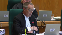
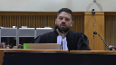

His Majesty the King v. Pascal Breault
This transcript was made with automated artificial intelligence models and its accuracy has not been verified. Review the original webcast here.
Justice Wagner (00:00:31): Bonjour, bienvenue à la
Cour suprême du Canada qui siège à Québec cette semaine pour la première fois de son histoire.
Good morning and thank you for attending the Supreme Court of Canada sitting in Quebec City.
We are very happy to be here today.
Ce n’est que la deuxième fois que
la Cour se déplace à l’extérieur d’Ottawa pour entendre des causes ailleurs au pays.
La première fois, c’était à
Winnipeg en 2019.
Les juges et le personnel de la Cour sont ravis de se trouver dans la plus belle ville patrimoniale d’Amérique du Nord.
Nous sommes tous et toutes touchés par la chaleureuse hospitalité de votre communauté.
Entendre des causes à l’extérieur d’Ottawa est une initiative inspirée par les principes d’accès à la justice et de la publicité des débats.
Cette visite est l’occasion de vous faire connaître notre travail, nos activités et notre rôle dans la démocratie canadienne.
So far this week, all nine of us have travelled across the region to speak with high school students.
I have to tell you, they ask us some very good questions.
The Court will meet many more people throughout the week, ending on Friday, with law students at l’Université de Laval. J’espère
voir certains d’entre vous cet après-midi au Musée de la civilisation, où la Cour sera l’autre d’un événement public gratuit et répondra
aux questions du public.
La Cour suprême du Canada est la juridiction d’appel d’un dernier ressort au pays.
Elle tranche certains des différents juridiques les plus importants et les plus complexes du pays.
Ce faisant, la Cour clarifie le droit pour l’ensemble de la population et fait ainsi en sorte qu’il soit appliqué de manière égale et équitable partout au pays.
Voilà pourquoi il est important que les gens comprennent comment et pourquoi la
Cour rend ses décisions.
Après tout, il est difficile d’avoir confiance en quelque chose que l’on ne comprend pas.
C’est pour cette raison que la Cour suprême crée des occasions afin que les gens puissent voir ce qu’elle fait et comment elle le fait.
Et tout comme vous êtes en mesure de le faire ici aujourd’hui, il vous est possible d’assister à des audiences partout ailleurs au Québec.
En effet, tous les tribunaux canadiens sont ouverts, impartiaux et indépendants.
Cela contribue en quelque sorte à faire de notre pays une superpuissance démocratique.
Je voudrais dire une dernière chose avant que nous commencions l’audience aujourd’hui.
En mon nom et au nom de mes collègues, je tiens à exprimer nos plus sincères et chaleureux remerciements à la juge en chef du Québec, Madame Manon Savard, ainsi qu’à la juge en chef associée de la Cour supérieure du Québec, Madame Catherine Larosa, et à la juge en chef de la Cour du Québec, Madame Lucie Rondeau.
Les audiences et nos activités de la semaine sont possibles grâce à leur appui enthousiaste et inestimable.
Many of you may have already remarked that the name of today’s case has been altered to reflect that Canada has a new head of state.
Where this case was initially filed as Her Majesty the Queen versus Pascal Beau, it is now His Majesty the King.
In practice, that is the only change that will occur at the Court, due to the death of Queen Elizabeth II.
Sur une note plus personnelle, le décès de la reine Elizabeth II m’a amené à réfléchir sur les six mois durant lesquels j’ai agi en tant qu’administrateur du Canada en 2021, lorsque la gouverneure générale précédente a quitté son poste.
Cette expérience m’a permis de réaliser encore davantage la santé et
la solidité de nos institutions démocratiques.
J’espère que votre présence à l’audience d’aujourd’hui vous inspirera le même sentiment.
Maintenant, commençons.
Dans la cause, Sa Majesté le Roi contre Pascal Beau.
Pour la place, Sa Majesté le Roi, Maitre Nicolas Abrant, Maitre Gabriel Bervin et Isabelle Cardinal.
Pour l’intervenant procureur général du Canada, Maitre Sean Godet et Maitre Julie Laborde.
For intervener, Attorney General of Ontario, James V. Palangio et
Nicolas de Montigny.
Pour l’intimé, Pascal Beau, Maitre Félix-Antoine T. Doyon, Maitre Camille Pelletier, CAMFINIT.
Pour l’intervenant, Association québécoise des avocats et avocats de la défense, Maitre Marie-Pier Boulay.
Pour l’intervenant, Association des avocats de la défense de Montréal-Laval-Longueuil, Maitre Jean-Philippe Marcoux, Maitre Vincent R. Paquet.
Maitre-Abrant.
Speaker 2 (00:06:30): Monsieur le juge en chef, mesdames et messieurs les juges, bonjour.
Avant de débuter, je vais prendre un petit instant au nom du directeur des poursuites criminales et pénales pour remercier l’initiative de cette Cour de visiter la Ville de Québec et d’offrir aux gens du public une chance d’assister aux travaux de la Cour.
Ceci dit, depuis 30 ans, ou même plus, il y a une entente entre les Cour d’appel canadiennes à l’effet que la norme d’immédiateté, comprise à l’article 254-2 autrefois, 320.27-1 aujourd’hui, doit être interprétée avec souplesse.
La grande majorité de ces Cour ont également trouvé, sur la base des différentes causes qui leur ont été soumises, qu’un délai pour livrer un appareil de détection approuvé était tolérable ou acceptable, tant qu’il ne dépassait pas le temps nécessaire, ou le temps qui aurait dû être nécessaire, pour consulter un avocat.
En 35 ans, plus ou moins, il n’y a pas eu de problématique majeure relevée par ces tribunaux d’appel.
Les affaires ont été réglées selon les circonstances de chaque cause.
Et en 35 ans, tous s’entendaient pour dire que la possession de l’appareil de détection approuvé n’était pas une condition de la validité d’un ordre policier de se soumettre à un échantillon d’alcool.
La plan ne demande pas de réinventer le droit aujourd’hui.
Il demande d’appliquer le droit tel qu’il existe et tel qu’il est appliqué depuis plusieurs années.
Et pour la plan, l’approche plus restrictive qu’a choisie de prendre la Cour d’appel du Québec manque de nuances pour combattre le fléau de l’alcool au volant au Canada, et rien ne justifiait de s’écarter, à notre avis, des précédents.
Pour vous faire valoir mes points, aujourd’hui, je vais aborder trois thèmes.
Premièrement, le cœur du litige, selon moi, le critère d’immédiateté tolère un certain délai qui inclut la possibilité de faire venir un appareil de détection approuvé lorsque ce délai est court et nécessaire.
Deuxièmement, l’infraction de refus d’obtempérer à une sommation légale de fournir un échantillon d’alcool ne nécessite pas la preuve ni la présence de l’appareil de détection approuvé sur les lieux.
Et puis finalement, en fonction des faits de la cause, je tenterai de vous démontrer que la condamnation prononcée par le juge de première instance de la Cour municipale était justifiée.
Justice Brown (00:08:58): En appuyant votre deuxième argument, est-ce que vous allez vous adresser aux questions existentielles que le juge Doyan soulève à p. 49 de ses motifs, quand il dit comment pouvait-il commettre une infraction en refusant de faire quelque chose qu’il ne pouvait pas faire?
Speaker 2 (00:09:20): Absolument, je vais aborder la question.
En fait, ça va tourner autour de mon argumentation sur la validité de l’ordre et ce que j’appellerai, ou ce qui a été appelé par les courts d’appel du pays, comme la fenêtre d’immédiateté, qui sont…
Justice Brown (00:09:35): pas certain que c’est une question de validité de l’ordre, c’est une question comment peut-il faire ce qu’il ne peut pas faire?
Speaker 2 (00:09:47): Je comprends le sens de la question.
Donc comment ne peut-il… Bien, en fait, ce n’est pas l’objectif ou le sens, selon nous, de l’infraction du refus d’obtempérer à une sommation légale.
Ici, ce qui est reproché à M. Brault ou ce que M. Brault reprochait à l’État, ce n’est pas qu’il y a eu un délai trop long avant que l’ABA lui soit présenté.
Ce n’est pas d’avoir décidé d’obtempérer et ensuite d’avoir attendu pour finalement refuser ou accepter.
Ce qui est reproché
, c’est qu’il y a eu une sommation légale.
Il y a un agent de la paix qui avait les soupçons de croire que M. Brault avait consommé de l’alcool.
Il y avait aussi une situation où cet agent de la paix-là savait ou croyait savoir qu’un ADA lui serait apporté à l’intérieur de dix minutes.
Le droit tolèrait ou tolère, dépendant de la province dans laquelle on habite, un certain délai pour l’apporter.
Justice Wagner (00:10:46): Maître,
sous-jacent à cet argument-là, c’est le droit fondamental de consultation d’un avocat qui, dans certaines circonstances comme celle-ci, est suspendu.
Et donc, c’est fondamental comme suspension.
Est-ce qu’on peut suspendre un droit fondamental comme celui-là dans un délai indéterminé, approximatif?
Parce que pour revenir à la question de mon collègue, le juge Brown, effectivement, comment peut-on considérer qu’un ordre est valide, valable, légal, s’il ne peut pas être exécuté?
Alors, ici, l’agent de la paix a demandé, effectivement, à l’individu de procurer un exemplaire d’haleine, mais peu importe sa réponse, il n’était même pas capable d’exécuter la demande.
Speaker 2 (00:11:36): Mais, en fait, selon nous, il aurait été capable de l’exécuter à l’intérieur d’un délai qui était inférieur au temps nécessaire pour consulter un avocat qui est le critère.

Ceci dit, l’infraction de refus, selon nous, ne concerne pas la possibilité ou non de le faire et, à cet égard-là, on est d’accord avec l’arrêt d’Ed Giorgio.
Lorsqu’il y a une expression verbale, claire, explicite, que l’individu refuse de soumettre à l’ordre, M. Brault, dans les circonstances de l’affaire, il ne sait pas que l’ADA n’est pas là.
Il ne sait pas dans combien de temps il va arriver.
Ce qu’il dit, c’est « je ne conduisais pas le VTT, c’est mon ami ».
On apprendra plus tard qu’il avait menti au policier à ce moment-là et que c’est lui qui conduisait le VTT.
Nous, pour l’infraction de refus d’obtempérer, on considère que tous les éléments d’infraction sont présents et, à cet égard-là, je crois que je vais me permettre de citer le nouveau régime législatif mis en place aux articles 320.27 et 320.27.
Le législateur, et c’est important parce que c’est lui qui crée les infractions, a créé à ce jour une nouvelle infraction qui s’appelle le dépistage aléatoire.
Dans ces circonstances-là, le policier qui a un ADA dans ses mains n’a pas à avoir de soupçons raisonnables puisque la loi lui permet, dans toutes les circonstances où il a un ADA dans la main, d’exiger un échantillon d’ALAD.
Ensuite, quand il est question des critères du policier qui fournit un ordre sur la base de soupçons raisonnables, le législateur n’exige pas que le policier ait dans ses mains l’ADA.
Justice Côté (00:13:25): Comment, je m’excuse de vous interrompre, mais sur ce point-là, dans notre interprétation de l’article 254 de B, à laquelle nous devons procéder, comment notre Cour peut se fonder sur ce nouveau régime de conduite en état d’ébriété, considérant l’article 45 de la loi d’interprétation fédérale?
Comment devons-nous en tenir compte, si nous devons en tenir compte?
Speaker 2 (00:13:50): En fait, selon nous, c’est un indice comme quoi le législateur a accueilli ou a pris acte des décisions, des cours d’appel à travers le pays, où des délais de 4 à 14 minutes ont été jugés comme étant valides, et je peux vous nommer les causes de Lato, Janssen, Higgins, Ritchie, Torsney, pour ne nommer que celle-là.
Et le législateur, il connaît ces causes-là quand il adopte le nouveau régime.
On ne dit pas que le nouveau régime est déterminant, mais dans l’interprétation que vous devez faire, et jusqu’à un certain point, le choix entre la vision de la cour d’appel du Québec et celle des autres cours canadiennes, selon nous, c’est un indice qui est assez fort que le législateur a pris acte de cela.
Justice Kasirer (00:14:40): Mais tout comme, M. Abram, la présence du mot immédiatement demeure un indice, n’est-ce pas?

Le juge Doyon le souligne, que malgré les modifications apportées au code, le mot demeure là et que le législateur est censé comprendre la jurisprudence de cette Cour.
Je vais vous ramener au fond de votre premier moyen en vous posant la question, parce que, je dis ça amicalement, je me demande si votre présentation de la position de la Cour d’appel manque des nuances.
C’est sûr que le juge Doyon dit, mais comme le juge Lamer l’avait dit dans Grant, comme le juge Fish l’avait dit dans Woods, qu’on donne le sens ordinaire au mot immédiatement, ça veut dire normalement tout de suite.
Mais le juge Doyon ne dit pas sans nuance que l’appareil doit être dans la voiture, il dit sauf immédiatement, sauf tout de suite, sauf circonstances exceptionnelles.
Il donne des exemples qui tirent de la jurisprudence, qui tirent de Burnshaw, qui tirent de Woods, impossible de faire le test avant que l’appareil ne se réchauffe, ça prend du temps, donc ce n’est pas immédiatement, ça prend du temps que du réchauffement.
Mettons l’accusé ou le conducteur a de l’alcool dans la bouche, donc on n’aurait pas un test fiable si on va de l’avant tout de suite.
Et le juge Doyon reconnaît ça, il souligne que la jurisprudence admet ça.
Alors ma question à vous, est-ce qu’il y avait des circonstances inhabituelles dans ce dossier?
Speaker 2 (00:16:27): Je vais vous répondre en deux temps, M. le juge Casirer.
Premièrement, je vais aborder rapidement les arrêts dont vous avez parlé de cette cour.
Puis ensuite, je vais m’attarder un petit peu plus en détail sur la notion de circonstance inhabituelle dont fait état le juge Doyon.
Première chose, dans Burnshaw, selon nous, c’est un exemple ou c’est un cas d’application au fait de la cause.
La Cour n’a pas, et j’ai relu l’arrêt plusieurs fois, limité à ce seul délai relatif à la fiabilité ou à l’opération de l’appareil, ceux qui sont acceptables.
En fait, j’irais un petit peu plus loin que ça, dans Burnshaw, au paraf 70, la Cour ne dit pas « le policier peut attendre si il suspecte que l’accusé a de l’alcool dans la bouche », il dit « doit attendre ».
Donc, c’est vraiment un cas qui est particularisé à Burnshaw.
Dans ce qui était de l’affaire Grant, ici, on parle quand même d’un long délai, 30 minutes, et on considère bien honnêtement que 30 minutes, c’était trop long et que ça ne respecte pas les critères de forthwithwindow ou d’immédiateté maintenant.
Mais, dans Grant, cette Cour dit quand même qu’il n’est pas ici question de parler du nombre de minutes nécessaires pour faire venir un ADA, on fait simplement dire que 30 minutes, c’est trop long.
Dans Woods, la situation, encore une fois, selon nous, elle est différente.
Monsieur Woods refuse sur le bord de la rue, est amené au poste et souffre finalement dans l’ADA 1h20 minutes après son interception initiale.
Ça non plus, ça ne rentre pas dans les critères de l’article et on est absolument d’accord.
Ceci dit, pour nous, les arrêts Burnshaw, Grant, Woods sont des exemples de certains délais qui sont acceptables liés aux faits de la cause.
Mais ça ne veut pas dire que le fait d’amener un ADA ou d’amener un appareil d’adoption approuvé sur les lieux pour réaliser les objectifs du régime législatif n’est pas une circonstance inhabituelle.
Et c’est là que nous sommes en désaccord avec la décision du juge Doyon.
Il faut savoir.
Justice Kasirer (00:18:54): Il n’y a pas d’APA dans le véhicule et ça c’est une circonstance inhabituelle.
Speaker 2 (00:19:02): Je ne dis pas que ça l’est à tout coup.
Ça peut l’être.
Il faut savoir, première chose, il n’y a pas eu de preuves dans ce dossier-ci que ça relevait de la commodité administrative.
Il n’y a pas eu de preuves parce qu’à l’époque on avait besoin d’un délai.
Ceci dit, les véhicules patrouilles sont pour la plupart équipés d’un appareil de détection approuvé pour la grande majorité.
Plus encore, il y en a suffisamment dans les régions pour que les appareils soient livrés presque systématiquement lorsqu’on a besoin de les faire livrer en bas de dix minutes.
Donc, c’est assez inhabituel qu’un appareil, qu’un véhicule patrouille n’ait pas l’appareil de détection approuvé.
Ceci dit, ça veut pas dire que dans tous les cas ce sera justifié.
Et nous, où on voit une problématique avec l’arrêt de la cour d’appel,
c’est qu’il n’y a pas de distinction entre patrouilleurs et policiers.
Puis quand on nous dit un appareil de détection approuvé devrait faire partie du coffre à outils des policiers et ils devraient tous en avoir, mais il y a un nombre important de situations où les policiers n’en auront pas.
Quand ils sont à pied, à vélo, à cheval, à moto, lors des grands événements, à la sortie par exemple des festivals.
Souvent on a des arrestations de gens qui ont bu dans les festivals qui dorment dans leurs roues.
Justice Côté (00:20:19): Mais maître Abram, c’est beaucoup plus facile
, c’est certain que les autos, les policiers dans les grands centres, c’est plus facile d’avoir l’appareil plus rapidement, mais quand on est en région, vous ne trouvez pas que l’État devrait prévoir que les policiers aient les appareils plus dits.
Si par exemple vous êtes sur une route qui a une heure, qui n’a pas de maison, n’est-ce pas que les policiers devraient avoir un appareil à leur disposition.
Speaker 2 (00:20:43): Je suis d’accord, Mme la juge Côté, et d’ailleurs, ils n’ont pas le choix, parce que s’ils ont une heure de route à faire pour livrer un appareil, à ce moment-là, ils ne respecteront pas le critère dont on vous parle, la fenêtre d’immédiateté, qui est le temps nécessaire à consulter un avocat.
Justice Côté (00:21:07): L’article 254 de B. Est-ce que votre position c’est qu’un tel délai fait partie de circonstances inhabituelles ou vous prétendez qu’il faille plutôt délaisser le concept des circonstances inhabituelles?
Speaker 2 (00:21:23): En fait, non, je ne crois pas qu’il faut délaisser le concept des circonstances inhabituelles.
On ne croit pas que ça doit être une pratique systématisée.
On est favorable à ce que l’État ait le plus d’appareils disponibles possibles.
Ce qu’on dit, c’est que ça prend une certaine flexibilité et souplesse dans l’interprétation de la disposition afin de permettre, dans certaines circonstances, que un appareil soit livré et à l’intérieur du délai pour lequel le droit à l’avocat est suspendu.
Il ne faut pas que ça fasse plus long que ça, puis les circonstances varieront.
Mais notre préoccupation principale, c’est vraiment les situations où il n’y en aura pas le policier, pour des raisons hors de son contrôle.
Ici, la seule preuve qu’on a, le policier nous dit qu’il n’en avait plus de disponibles au poste.
Il croit se souvenir qu’il n’en avait plus de disponibles au poste parce que les chiffres de nuit avaient pris tous les ADA, puis il n’était pas revenu avec eux.
Bien, dans ces circonstances-là, ça n’était pas capricieux, ça n’était pas volontaire.
Et il faut se rappeler que lorsque ces policiers-là sont appelés à intervenir sur les lieux, ils ne font pas une interception comme patrouilleurs routiers qui enquêtent ou qui font une opération pour l’alcool au volant.
Ce sont les policiers qui se trouvent les plus près de quelqu’un qui est la cible d’une dénonciation du public, de deux patrouilleurs de sentiers, qui disent «
On a un homme qu’on croit avoir conduit en état d’ébriété, il est en train de s’en aller des lieux, puis il est agressif.
Le premier véhicule patrouille disponible doit se rendre en ces circonstances-là.
Et s’il n’y a pas d’ADA, mais ça prend, selon nous, une certaine flexibilité d’interprétation pour laisser au juge de première instance la possibilité de déterminer ou non si ce délai-là était raisonnable utégard au droit 10B qui est suspendu.
Justice Brown (00:23:26): Pour adopter ce souplesse ou cette flexibilité, est-ce qu’il ne faut pas avoir une réponse à ce que le juge Doyon disait à paragraphe 61 sur la logique de Georgiou?
Qu’est-ce que vous dites à ça?
Speaker 2 (00:23:45): Mais en fait, selon nous, et le paragraphe 61, pour le ministère public, il est problématique, et pour nous… En effet.

Non, mais selon nous, il y a une certaine confusion à cet égard-là, relativement à l’infraction de refus et avec celle d’avoir un échec au moment de souffler dans l’ADA.
Pour nous, dans les circonstances que le juge Doyon dit, la première personne, il faut se souvenir que l’infraction de refus, elle a été créée dans les années 70 pour forcer les automobilistes dans ce domaine fort réglementé à fournir l’échantillon d’haleine lorsqu’ils sont interceptés par le policier.
En érigeant cette infraction de refus-là, jamais le législateur ne l’a fait dépendre de délai ou autre.
Puis quand ça arrive à monsieur Brault, c’est là qu’on va faire la distinction avec le paragraphe 61, si monsieur Brault fait ce que la loi lui dit, il accepte, et par la suite, si c’est trop long, il pourra refuser et être acquitté.
Ça lui donne aussi un moyen de défense au procès.
Mais s’il refuse tout de suite, pour nous, sa responsabilité criminelle, elle est engagée.
Il a, dans ces circonstances-là, l’intention de refuser et il a commis l’acte de refuser.
Donc, le fait que l’ADA n’arrivera que plus tard, et nous on dit que dans un délai de plus ou moins d’une minute, sans aller sur un point de vue mathématique, mais relié à la constellation d’un avocat, le policier pouvait lui donner l’ordre parce qu’à ce moment-là, lui croyait qu’il aurait un ADA à l’intérieur de ce qui a été jugé par les cours d’appel du pays, comme raisonnable, cette fenêtre d’immédiateté-là,
parce que…
Justice Côté (00:25:44): …
Justice Côté (00:25:49): raisonnablement prévoir et le prévenu a déjà refusé.
Alors, qu’est-ce qu’on fait?
Speaker 2 (00:25:56): En fait, nous, dans ces circonstances-là, à l’instar de l’arrêt des Georgios, on ne voit pas une problématique, d’un point de vue du droit criminel.
Parce que la personne qui a refusé, elle a déjà connu les fractions.
Puis l’ordre, si le policier croyait l’avoir dans un délai qui était raisonnable, dans un délai qui était dans la fenêtre d’immédiateté, il a fourni un ordre qui était valide.
Et cette personne-là a volontairement décidé de tenter d’éluder à sa responsabilité criminelle en ne soufflant pas dans l’appareil de détection approuvé.
Et je vais citer le juge Ken Corr dans son ouvrage « Impair Driving
Canada » qui dit «
La personne qui refuse renonce à son droit de prouver à l’État qu’il a un taux d’alcool inférieur à la limite permise ou à faire valoir des moyens de défense contre une inaction de l’État au stade de l’éthylomètre ».
Nous, c’est comme ça qu’on voit les fractions de refus.
L’objectif derrière ça, et il faut revenir aux objectifs législatifs qui ont justifié dans Thompson la suspension du droit à l’avocat, c’est combattre un fléau dans un domaine fortement réglementé qui pose un grave danger pour la sécurité publique.
Justice Kasirer (00:27:10): M. Abram, juste pour faire suite à la question
, comment répondez-vous aux objections du juge Doyon que l’interprétation que vous faites de D. Giorgio est en porte-à-faux avec le texte de la loi et le texte même de l’Ordre?
Au paragraphe 57, il explique que le texte même de l’Ordre est en porte-à-faux avec le texte de la loi et le texte même de l’Ordre?
Overlapping speakers (00:27:36): forthwith to enable a proper analysis of your breath to be made?
Justice Kasirer (00:27:41): mais ce n’est pas possible de le faire.
Ça nous remonte au début des questions qui ont été posées tout à l’heure.
Comment répondez-vous aux juges doyens?
Speaker 2 (00:27:54): Mais en fait, tout dépend de la façon d’interpréter le terme immédiatement que choisit le législateur.
Selon nous, le juge Doyon, il voit un critère d’instantanéité.
Dès le moment où il doit être possible de souffler.
Aucun délai ne serait tolérable.
Nous, ce qu’on dit, c’est qu’il y a une plus grande variable, une plus grande variance dans les délais qui sont tolérables.
Et le délai qui est acceptable, par exemple, pour l’opérabilité ou le résultat à obtenir, bien, pendant ce temps-là, le policier, quand il donne l’ordre, il donne l’ordre de souffler immédiatement.
Mais après, on lui dit, vous devez quand même attendre 15 minutes.
Speaker 1 (00:28:40): Mais maître
, il faut avoir une ordre valide et si je comprends bien votre position, une ordre en vertu de paragraphe 2 de l’article 254 est présumé valide, mais qu’un long délai peut y sapper la validité.
Cela veut dire, selon vous, que les éléments de l’infraction peuvent être satisfaits au moment du refus même si l’appareil de détection approuvé est assez loin des lieux.
Alors, si l’individu change d’avis et s’il décide d’obtempérer le moment que l’appareil de détection approuvé arrive au lieu, est-ce qu’il a commis le crime?
Alors, c’est une question pour moi importante et comment peut-on obtempérer avec un ordre auquel il est impossible d’obtempérer?
Speaker 2 (00:29:59): Mais, selon nous, ça va jouer en fonction des circonstances.
Dans le premier exemple que vous donnez, nous ne voyons pas, nous ne pensons pas qu’il est possible pour quelqu’un qui a déjà refusé un ordre présumé valide de revenir sur son choix.
Il a déjà commis une affaire.
Overlapping speakers (00:30:20): Come see this.
Speaker 2 (00:30:20): C’est présumé valide.
Mais… Oh, excusez-moi. Non, non.
Alors… En fait, si on va plus loin puis on dit, pour revenir au paragraphe 61 du juge Doyon, puis on dit, bien, cette personne-là aurait un certain mot à dire dans l’enquête.
Est-ce que la personne qui est sommée légalement par un policier de fournir un échantillon peut dire, a-tu l’appareil?
Probablement. Oui.
Si elle le dit pas puis qu’elle refuse pour d’autres moyens et que ce n’est pas un élément essentiel de l’infraction d’avoir un appareil, pourquoi la venue éventuelle de l’appareil deviendrait un élément essentiel de l’infraction?
Justice Côté (00:31:07): Mais pourquoi le policier ne dirait pas à la personne à qui l’ordre est donné « Écoutez
, on vous donne l’ordre, mais on doit attendre l’appareil.
On pense qu’il va arriver dans 10 minutes ou 15 minutes.»
Oui, la personne peut demander «
Avez-vous l’appareil?
» Mais si la personne ne demande pas «
Avez-vous l’appareil?
» pourquoi le policier ne le dirait pas à la personne?
Speaker 2 (00:31:25): Mais comme bonne pratique, probablement que je ne serais pas contre l’idée, mais dans les circonstances de notre dossier, ce n’est pas ça.
Monsieur Brault ment au policier en disant «
je ne conduisais pas ».
Il tente de se soustraire à sa responsabilité.
Justice Côté (00:31:41): de ce mensonge-là,
là, que l’utilité du mensonge est pas pertinente pour nous, pour notre interprétation de 253.
Speaker 2 (00:31:48): En fait, le fait que le suspect, la personne interceptée à ce moment-là, soit au courant ou non qu’il y aura un délai avant de souffler, c’est une circonstance qui est pertinente, mais que selon moi, elle n’a pas d’influence sur l’obligation ou non d’avoir l’ADA dans ses mains.
Ça ne fait pas non plus que le policier ne peut pas avoir aucun délai pour faire livrer un appareil de détection à trouver.
En gros, ce que j’essaie de dire, c’est que oui, un policier pourrait, ou peut-être cette Cour décidera, devrait informer si un délai doit survenir, les motifs, puis la personne pourra peut-être prendre à ce moment-là une décision éclairée.
Justice Brown (00:32:37): Don’t you think there is a need for transparency in this presumption when a police officer is an individual who produces a sample without telling him that he is not in the position of a device?

Speaker 2 (00:33:01): Il y a un problème de transparence.
Justice Brown (00:33:08): et nous divulguons les circonstances factuelles qui permettraient normalement au détenu de lui opposer une excuse raisonnable pour refuser.
Speaker 2 (00:33:28): Mais, selon nous, ça ne fait pas partie de l’infraction et de l’obligation du policier en vertu de la loi.
Et là, c’est là qu’il l’enjeu.
La loi ne le prévoit pas.
Les éléments essentiels de l’infraction de refus ne le prévoient pas.
Les tribunaux d’appel s’entendent depuis toujours.
La poursuite n’a pas à faire la preuve qu’un appareil sur place, encore moins qu’il est fonctionnel.
On n’a pas à sommer l’individu avec des mots précis.
Puis, je n’ai pas vu dans la jurisprudence qu’on a obligé de lui dire si l’appareil n’était pas suffisant.
Justice Brown (00:34:03): Mais le policier sait bien que l’appareil n’arrivera sur les lieux que plus tard, mais il offre tout de même aux détenus s’engager sa responsabilité criminelle sans lui faire part du délai envisagé.
Speaker 2 (00:34:24): C’est un problème si le policier donne un ordre alors qu’il sait que le délai sera trop long.
Par exemple, dans l’arrêt de George de la Cour d’appel de l’Ontario, nous, dans notre cas, il sait que l’ABA est à environ 10 minutes.
C’est une croyance raisonnable que l’ABA sera arrivé dans 10 minutes.
Dans George, le policier, puis le délai a été déclaré déraisonnant par la Cour d’appel de l’Ontario, se fait dire 20 minutes, il n’y en a pas dans ton secteur.
Malgré ça, il ne fait rien pour essayer de donner le droit à l’avocat, il fait juste patienter l’accusé.
Pour nous, George, c’est du droit bien appliqué pour ce délai-là, qui est un délai qui
Overlapping speakers (00:35:03): nous pouvons légiférer un délai de 20 minutes.
Speaker 2 (00:35:05): Non, non.
C’est pour ça que c’est lié à la suspension du droit à l’avocat qui provient de l’arrêt Thomson et que cette cour a approuvé, à quelques reprises, les paroles de la juge Arbour dans l’arrêt Côté.
Overlapping speakers (00:35:23): Tout tourne sur la croyance sincère du policier.
Speaker 2 (00:35:27): Mais en fait, j’ai l’impression, et ça ressort selon moi un petit peu du jugement de l’arrêt Piadza de la Cour d’appel du Québec qui a mené à l’arrêt Brot, dans lequel il y aurait peut-être une méfiance que les policiers tenteraient d’usurper des refus à certains citoyens.
Mais il faut savoir que les refus, ce n’est pas si fréquent que ça.
La plupart du temps, le policier, quand il donne un ordre, il y a un soupçon de croire que la personne, elle l’a bu et elle l’a conduit.
S’il n’a pas l’ADA et qu’il sait qu’il ne l’aura pas en tant réglementaire, il ne pourra pas donner l’ordre parce que si la personne accepte, son dossier va tomber et il n’aura pas fait sa tâche de policier.
Overlapping speakers (00:36:17): Il n’y a pas de temps réglementaire, c’est pour ça qu’on est ici.
Speaker 2 (00:36:20): Mais ce que je vous dis, peut-être que ça va mieux résumer ma pensée, il n’y en a pas de temps réglementaire et c’est pour ça que vous avez pu voir que le ministère public n’a pas repris l’arrêt petit comme tel et dire que c’est un délai de 10 ou 15 minutes.
On comprend le 15 minutes de l’arrêt Burn-Shot, c’est lié à la viabilité du test.
Ce qu’on dit
, c’est que le délai va être en fonction des circonstances et cette question de délai-là, elle se pose lorsque la personne accepte de souffler.
Quand elle accepte, puis là ce délai-là il est large, ça peut inclure sécuriser une scène d’accident, compléter une enquête, valider l’identité de la personne, les circonstances sont très larges.
Il peut survenir tout plein de délais, la jurisprudence est remplie d’exemples.
Et ces délais-là, parfois sont raisonnables, parfois ne sont pas, mais toute la jurisprudence, elle est développée dans le cadre des infractions à des kilomètres plus tard, mais sur la validité, oui.
Speaker 1 (00:37:20): Est-ce
que les circonstances peuvent inclure les besoins administratifs, les besoins budgétaires?
J’appose la question parce que, comme le juge en chef a déjà noté, la constitutionnalité de la disposition a lié à l’interprétation de le mot immédiatement.
Speaker 2 (00:37:43): Et puis on ne remet pas ça en cause.
Ce qu’on dit, premièrement, dans ce dossier-ci, il n’y a pas de preuve que c’était de la commodité administrative.
Pas dans ce dossier, mais …
Speaker 1 (00:37:59): Nous devons expliquer la loi, aborder la question pour tous les cas.
Speaker 2 (00:38:05): Absolument.
Mais, à notre connaissance, il devrait y avoir un élément fort, une expression forte, que les patrouilleurs devraient être munis d’un ADA, ceux qui font de la circulation routière.
Mais ceci dit, ça ne permet pas, nous ne croyons pas, à tous les policiers d’en avoir.
Et c’est pour ça que ça prend une certaine flexibilité.
Puis quand on se ramène à l’infraction de refus, parce que je terminais de répondre à la question par rapport à ça, l’infraction de refus, elle n’a pas de lien, selon nous, avec le délai, si le policier, quand il fait son ordre, il y a les croyances qui veulent l’avoir, l’ADA, en temps opportun.
Puis nous, c’est ça qu’on croit qui est arrivé dans ce dossier-ci et qui est une façon fonctionnelle de travailler, ça fait plus d’eux.
Justice Côté (00:38:54): le juge Doyon, dans ses motifs, au paragraphe 51, dit qu’il lui paraît illogique, justement, de conditionner la légalité de l’ordre au délai qu’il faudra pour obtenir l’appareil.
Et il dit que c’est une situation, c’est un résultat intolérable parce que ça crée une incertitude.
Alors, supposons que le policier, et j’assume sa bonne foi, pense que… il donne son ordre au moment où il pense que l’appareil va arriver dans dix minutes, par exemple.
Alors, donc, là, vous, vous dites que c’est un ordre valable.
Mais supposons que l’appareil n’arrive pas dans ce temps théorique prédéterminé, et non pas réglementaire.
Alors, est-ce que ça veut dire que l’ordre devient soudainement invalide?
Et c’est l’illogisme de cette position que M. le juge Doyon soulève au paragraphe 51 de sa décision.
Speaker 2 (00:39:42): Mais cet illogisme, selon nous, il fonctionne parce qu’il est directement lié à la raison qu’il y a une infraction de refus.
Le législateur, en imposant l’infraction de refus, et en n’exigeant pas que le policier ait un adhéas qui le dit fortement, dans le contexte législatif, la conduite à la capacité d’affaiblir, vous devez obtempérer à cet ordre…
Overlapping speakers (00:40:08): Amy Jeph-Month, Eugene.
Speaker 2 (00:40:09): ou qui est supposé être valide.
Oui, mais si la personne refuse immédiatement, elle l’a obtempéré immédiatement en refusant.
Si elle refuse, expressément.
Après, si elle accepte et que c’est trop long, comme je disais tantôt, elle a un moyen de défense et le policier pourrait même annuler tout simplement la situation.
Donc, j’ai quand même d’autres points que j’aimerais faire valoir.
Justice Jamal (00:40:39): Si je peux poser une question, peut-être que les questions cherchent un principe qui lie toutes les circonstances, parce que tout le monde est en faveur d’une interprétation avec suplesse.
Les mots, comme vous l’avez accepté, les mots du juge Spinker dans Burnshaw étaient liés avec le bon fonctionnement de l’appareil.
Mais peut-être le principe est, comme c’était déjà mentionné, c’est que c’est l’appareil, dans les termes de la loi, ce sont les circonstances nécessaires pour la réalisation d’une analyse convenable.
Et ces mots limitent les principes qui peuvent s’appliquer pour une circonstance individuelle.
Toutes les circonstances, ce n’est pas aucune raison, ce sont les raisons pour le bon fonctionnement de l’appareil.
Peut-être ça c’est le principe qui s’applique quand on l’espèce.
Speaker 2 (00:41:39): ça va paraître, j’espère pas tirer par les cheveux ce que je vais dire, M. le juge Jamal, mais c’est difficile de faire une analyse convenable si on n’a pas l’appareil, si l’appareil est effectueux, si ça, on en convient.
Ce qu’on dit, c’est que parfois le fait de ne pas avoir l’appareil dans l’interprétation du guitare d’immédiateté permet une livraison ou un moyen de la porter.
Parce que oui, la analyse convenable, on pense immédiatement à Burnshaw ou Anderson de la cour d’appel à Saskatchewan de mémoire qui disent on a besoin de réchauffer pendant 16 minutes l’appareil, c’est vrai.
On pense à la défectuosité sur le coup.
Justice Wagner (00:42:41): Est-ce
que vous plaidez, en fait, Mme Tabran, que l’accommodement administratif, ce serait une cause, effectivement, qui justifierait le délai?
Speaker 2 (00:42:49): Je ne plaide pas que l’accommodement administratif est une cause qui permet un délai, mais dans les réalités policières, dans les réalités du travail des policiers, il y a des circonstances où les policiers ne peuvent pas en avoir ou n’en n’ont pas.
Par exemple, et là, c’est dans l’arrêt Thompson de 2001 de la Cour d’appel de l’Ontario, ils reprenaient un élément de l’arrêt Banguadat et ont dit, il faut laisser une certaine souplesse par exemple à Noël parce qu’il y a tellement de barrages routiers que les autres patrouilleurs ne sont incapables d’en avoir.
Justice Wagner (00:43:29): Mais là, on s’éloigne de ce que mon collègue, juge de Malle, disait tantôt.
Mais quand on lit l’exception à l’impossibilité d’utiliser l’appareil parce que c’est quoi, soit défectueux ou il y a des circonstances exceptionnelles qui font en sorte qu’il ne peut pas être utilisé, c’est une chose.
Mais quand on dit qu’il ne peut pas être utilisé parce qu’il n’y en a pas ou parce qu’il y a trop de véhicules sur la route ou on ne peut pas en avoir un dans chaque véhicule, là, on rentre dans le domaine de l’accommodement.
Et ce n’est plus lié maintenant à l’exercice ou à l’utilisation de l’appareil tel que prévu par la loi.
Speaker 2 (00:44:06): En fait, je crois que le critère d’analyse convenable, dont il y a des questions, je comprends qu’il a été utilisé et qu’il est directement lié au terme immédiatement, mais selon nous, c’est un petit peu pour ça que la Cour a rejeté dans Burnshaw l’approche du juge Corey, qui était un critère uniforme, strict, tout le monde doit y passer, parce que l’objectif, c’est d’éviter que des gens qui souffleraient avec un appareil qui ne fonctionne pas soient amenés au poste pour l’épreuve plus contraignante, plus longue, plus invasive de l’éthylomètre.

Mais nous ne croyons pas que c’est limitatif, l’utilisation du terme pour une analyse convenable, au immédiatement, lorsqu’on se ramène à l’arrêt Thompson, puis qu’on regarde que tout ça est lié à la suspension du droit à l’aveugle.
Justice Kasirer (00:45:10): Est-ce que
, justement, le principe dont parle le juge Jamal, et je nous fais remonter au commentaire du juge en chef par rapport à Disbay, est-ce que les propos de la juge Arbour offrent ce principe-là quand elle dit « vous étiez sur le point de les citer », quand elle dit, et c’est cité par le juge Fish dans Woods, et c’est cité par le juge, le même extrait cité par le juge Doyon, dans notre affaire, quand la juge Arbour dit « autrement dit, si l’agent de police n’est pas en mesure d’ordonner à l’accusé de fournir un échantillon d’haleine, avant que celui-ci ait, de façon réaliste, la possibilité de consulter un avocat, l’ordre de l’agent n’est pas un ordre fait en vertu de l’ancienne disposition ».
Alors, ce n’est pas un ordre, donc il n’y a pas de responsabilité criminelle, mais quelle est la pertinence pour la mesure de la durée de cette idée avant que celui-ci ait, de façon réaliste, la possibilité de consulter un avocat.
Speaker 2 (00:46:19): Mais selon nous, la pertinence est directement liée à l’arrêt de Thomson et à la suspension du droit à l’avocat.
Parce que la problématique du délai ici, c’est que la personne, elle est détenue, tout le monde en convient, et elle n’a pas le droit à son droit à l’avocat.
La raison pour laquelle on le fait, c’est que dans Thomson, on parlait d’un bref délai.
Dans Thomson, si je me souviens bien, le juge Ledin cite même l’arrêt CO, qui a permis un 10 minutes, et dans les meilleurs délais, le juge Ledin, ou dans de brefs délais dans son arrêt.
Et nous, comment on voit ça, c’est que ça ne prend pas zéro minute de consulter un avocat.
Et ce n’est pas le fait non plus de communiquer avec un avocat, c’est réellement de consulter un avocat.
Puis à cet égard-là, j’aimerais ça vous lire un petit extrait de l’arrêt de soignée de 2007, de la Cour d’appel de l’Ontario, sur cet aspect de communication, de consultation de l’avocat versus communication, puis c’est d’où vient cette idée d’avoir un délai qui lui est lié.
C’est le paragraphe 13, c’est à mon onglet 11 de mon condensé.
Je vais lire en anglais et je traduirai pas.
In coming to this conclusion, we consider it important to draw a distinction between a detainee having a chance to call consul and a detainee being able
to consult with consul.
The trial judge was under the
impression
that in deciding whether, in the circumstances, there was a realistic opportunity for the appellant to consult consul, all that was required was that to be able to call consul in a few minutes it took for the ASD to arrive and be ready for use.
With respect, we think that the trial judge erred in that regard.
The question he should have asked is whether, in all those
circumstances, there was
a realistic opportunity for the appellant, in the space of six or seven minutes, to contact, seek and receive advice from consul.
Had the trial judge framed the issue that way, he would have, in our view, decided that it can be issued differently.
This is linked to the rights of the lawyer.
But what we understand is that a delay to consult a lawyer, if the steps of the ADA are taken before that, is correct.
And in a case of clear refusal, as is the case today and as is the infraction that must be at the forefront, according to us, of the court’s decision, in the case of a clear refusal, if there is a delay and the refusal is immediate, the person has responded immediately by refusing a presumed valid order and that the police officer has given, in the circumstances of the cause, but we believe that it should also be a statement, in the circumstances in which they believed they could receive their debt.
According to us, there is not…
We do not impede too widely the right of the lawyer for delays of four, six, eight, twelve minutes. All
the
delays that were accepted
on this day
in Canada were 14 minutes or less, apart from
the 15 minutes for the reliability of the test.
The rest, above 15 minutes, have all been rejected by the appeal courts.
Justice Côté (00:49:38): M. Abram, donc, vous nous demandez de lire le terme immédiatement comme signifiant « dès que possible » ou « dès que raisonnablement possible ».
Est-ce que c’est ce que vous nous demandez?
Speaker 2 (00:49:49): non, ce que je demande c’est immédiatement ça veut dire dans, et je vous rapporte au test de l’arrêt Coinsa par AF45 à 49 qui est mon onglet, pardonnez-moi, avec lequel nous sommes d’accord, mon onglet 8, où la Cour d’appel de l’Ontario nous dit qu’on doit regarder cinq éléments pour déterminer si le délai est raisonnable.
Première chose, ça doit être fait contextuellement.
Deuxième, la demande doit être faite promptly aussitôt qu’il forme ces soupçons raisonnables de croire.
Ça prend cette demande prompte là et une réponse immédiate, même si dans des circonstances inhabituelles un délai plus grand peut être toléré.
Quatrième, ce délai-là inclut un temps raisonnablement nécessaire lorsqu’un échantillon d’haleine ne peut pas être obtenu immédiatement, notamment pour amener un appareil de detection prouvé.
Et cinq, c’est une des considérations à prendre, c’est est-ce que la police réalistement aurait rempli son obligation avant le temps qui était nécessaire pour consulter un avocat.
Puis quand on parle des circonstances de chaque affaire, je pense que c’est important de mettre en évidence que les tribunaux canadiens depuis les trente dernières années qui appliquent cette vision de la fenêtre d’immédiateté plutôt qu’un critère d’instantanéité, ont su répondre aux problématiques qui sont soulevées.
Dans Megahit, par exemple, le délai était de quatre minutes.
La Cour d’appel avait auparavant déterminé que des délais plus longs étaient raisonnables.
Mais là, elle dit, le policier dans cette affaire-là était attiré à la circulation.
Il y avait un appareil disponible, mais il ne l’a pas pris avec lui.
Le quatre minutes, il était de raisonnable.
Puis les tribunaux sont capables de répondre à ça.
Puis dans certains cas, des délais de zéro minute seront applicables.
Mais dans d’autres, il est possible qu’ils fassent faire venir un appareil.
Dans notre mémoire, on vous donnait un exemple par rapport à l’arrêt Anderson.
L’arrêt Anderson, le 16 minutes pour réchauffer l’appareil, il va avec la fiabilité du test.
Il a été correct.
Mais faire venir, selon nous, un appareil, selon l’arrêt du juge Doyon, faire venir un appareil chaud dans un délai plus court, chaud qui serait resté au poste de police, ça ne constituerait pas un délai qui est jugé raisonnable.
Justice Kasirer (00:52:42): C’est parce que ce n’est pas la mesure quantitative, c’est la qualité qui est en jeu.

Il me semble que vous nous renvoyez à croire en ça et ça contredit quelque chose que vous avez dit tout à l’heure quand on vous a posé la question quant à la commodité administrative.
Vous avez dit non, non, non, je ne demande pas ça.
Regardez la deuxième phrase à 48.
Justice Kasirer (00:53:03): Fourth, the immediacy requirement must take into account all the circumstances.
These may include a reasonably necessary delay where breath tests cannot immediately be performed because an ASD is not immediately available.
Inaudible.
Justice Kasirer (00:53:21): Est-ce que vous êtes d’accord avec ça?
Ça me semble que ça contredit à la fois ce que vous avez répondu à Mme Karagatsani et à Mme Côté.
Speaker 2 (00:53:32): Si ça contredit ce que j’ai dit, ce n’était pas mon intention dans ma réponse.
Justice Kasirer (00:53:43): C’est une raison de commodité administrative, ça va impliquer un délai que vous considérez ou que quelqu’un considérerait raisonnable, mais c’est la commodité administrative, ça passe pour vous.
Speaker 2 (00:53:57): En fait, mon point, c’est plutôt que le fait de ne pas avoir un ADA, ça ne relève pas nécessairement de la commodité administrative. Et

c’est là, mon point, où j’espère réussir à vous convaincre que ça prend encore une souplesse pour d’autres situations que la seule viabilité du test ou l’opération de l’appareil pour ces situations-là.
Ensuite, je comprends les difficultés avec l’approche un petit peu au cas par cas pour le juge doyant.
Par contre, les tribunaux sont habitués.
Le nombre de situations que les juges sont appelés à trancher par rapport aux circonstances particulières de chaque cas sont quotidiennes dans nos palais de justice.
Justice Kasirer (00:54:57): Mais au moment où on demande au gars de souffler, il ne sait pas si c’est légal ou pas l’ordre qui lui est donné.
C’est le seul problème.
Speaker 2 (00:55:03): Mais, en fait, le problème, c’est que le citoyen, dans cette situation-là, il doit présumer que l’ordre est valide et il doit savoir que s’il refuse, il engagera sa responsabilité criminelle.
Et c’est là qu’on est d’accord avec l’arrêt des Georgios de la Cour d’appel de l’Ontario et c’est là, c’est pour ça qu’on ne voit pas de problématique réelle avec le paragraphe 61 du juge Doyon dans son arrêt, parce que la personne qui décide de collaborer, elle a respecté le schéma législatif en place et, par la suite, si l’État ne respecte pas sa promesse, l’État aura failli à sa tâche.
Par contre, si la personne refuse immédiatement un ordre qui est présumé valide d’un policier qui devrait avoir des soupçons, parce que s’il n’y a pas des soupçons nécessaires, ou, selon nous, s’il n’est pas capable de dire qu’il y aura la déha en temps opportun, son ordre ne sera pas valide.
Justice Côté (00:56:04): On peut être à part vous dire s’il refuse immédiatement, mais le mot immédiatement dans la disposition qu’on doit interpréter s’applique à fournir.
Il doit fournir immédiatement.
J’ai toujours cru que à l’impossible nul n’est tenu.
Lorsque le policier lui dit fournissez immédiatement, c’est quelque chose qui ne peut pas arriver ici.
C’est impossible.
Speaker 2 (00:56:24): Mais à cet égard-là, tout va dans l’interprétation du terme immédiatement et de la souplesse qui a été mise en place.
Et je reviens à mon exemple sur la viabilité dans Burnshaw.
Le policier, l’ordre qu’il donne, il dit « vous devez soupler immédiatement ».
Et après on lui dit « mais c’est impossible, vous devrez attendre 15 minutes ».
C’est la même situation.
Si le suspect a de l’alcool dans la bouche et que le policier lui dit «
soufflez immédiatement monsieur, vous avez de l’alcool dans la bouche, vous devrez souffler dans 15 minutes », on ne voit pas la différence, parce qu’il y a un délai qui est acceptable, avec le fait qu’il n’y ait pas l’ADA.
Parce que de ce délai-là, l’ordre serait quand même de souffler en même temps.
Justice Brown (00:57:15): Le délai, c’est la cause de l’État, ça c’est une distinction importante selon moi.
Speaker 2 (00:57:23): Écoutez, je comprends que la Cour d’appel, il voit une communication administrative, il voit une cause de l’État.
Ceci dit, le législateur ne l’exige pas d’avoir l’appareil dans ses mains.
Et comme je le disais à la Jusqu’au-Té en début de vidéo, il n’y a pas d’appareil dans ses mains.
Justice Brown (00:57:44): Sauf que l’administrate a utilisé le mot immédiatement.
Speaker 3 (00:57:48): Mais ils ont utilisé le mot immédiatement, mais ils ont aussi dit une analyse convenable.
Je veux retourner sur ce point.
Comme vous le savez, la disposition stipule ça.
Je ne comprends pas vos arguments que c’est une phrase limitative.
Parce que, est-ce que ce n’est pas un élément nécessaire de cette disposition?
Pas juste le refus, pas juste le délai, mais si la DIA ne passe sur le lieu lorsque la demande est faite et qu’il n’y a aucun moyen d’effectuer une analyse convenable, n’a-t-il pas une impossibilité de remplir les éléments nécessaires de cette infraction?
Qu’est-ce qu’on en donne sur les mots «
analyse convenable » ici?
La réalisation de l’analyse convenable.
Speaker 2 (00:58:51): La réalisation de l’analyse convenable sur nous, ça a été grandement analysé par rapport à l’arrêt BurnShut.
On est d’accord pour cette justification de délai-là.
Ce que je voulais dire, ce que je veux dire ou ce que nous nous soumettons, c’est que l’analyse convenable a justifié le délai dans BurnShut.
Ça ne fait pas des autres causes de délai.
Speaker 3 (00:59:23): absolument impossible de le faire.
Ici, jamais un ADA sur la scène.
Speaker 2 (00:59:31): Mais si on considère que c’est instantanément, si on considère qu’il y a zéro minute, en effet, on ne pourra jamais le faire.
Sauf que ce n’est pas comme ça que les tribunaux ont interprété, selon nous, et on a beaucoup d’exemples à cet égard-là, la faite naître d’immédiateté.
Et la raison pour laquelle on a laissé ces délais de livraison d’ADALE, c’est réellement à cause de l’enjeu du régime législatif relatif aux conduites avec les capacités affaiblies.
C’est pour ça.
Et là-dessus, je ramène à Thompson.
J’ai plus énormément d’arguments à faire valoir.
Ceci dit, je veux quand même dire quelque chose.
Il n’y a pas, comme je dis, c’est pas une exigence législative et le nouveau régime, si on suit l’arrêt de la Cour d’appel, rendrait absolument désuet 320.27-1.
Parce que si le policier doit avoir un ADA lorsqu’il a des soupçons, à quoi ça lui sert d’avoir des soupçons s’il doit avoir un ADA pour demander sans soupçons?
L’interaction entre les deux ne fonctionne plus.
Ensuite, il n’y a pas eu, malgré ce que mes collègues l’intimés et les associations d’avocat de la défense, de seuil de tolérance extrêmement élevé.
On reste dans des délais qui sont brefs pour livrer un ADA.
On ne pense pas qu’il y a besoin de modifier tout ce qui a été enseigné par les cours d’appel depuis CEO ou CO en 1996 jusqu’à l’arrêt-brau.
Il n’y a pas eu de surcharge de contestation, le volume régulier en matière de conduire des facultés affaiblies.
On n’a pas besoin d’un électrochoc, pardonnez-moi l’expression, comme il était nécessaire dans le Jordan, parce que les délais étaient extrêmement allongés.
Le système fonctionne et si vous acceptez qu’un délai court est acceptable, il s’auto-régule.
Parce qu’il doit y avoir, mettons que le délai, c’est celui qui a été jugé acceptable par les cours d’appel, il devra toujours y avoir un ADA à plus ou moins quelques minutes du lieu, même si le policier n’en a pas.
Parce qu’au-delà de ça, les délais seront tout le temps jugés hors du cadre de 254-2, maintenant 327-1.
Donc, si vous n’avez pas…
Justice Kasirer (01:02:09): Okay.
Overlapping speakers (01:02:11): J’ai une question aussi, mais monsieur le secrétaire.
Justice Kasirer (01:02:16): Si jamais la Cour ne vous suit pas sur DiGiorgio, on n’accepte pas votre position de DiGiorgio, quel est autrement dit que ce n’est pas en l’absence de l’appareil, ce n’est pas son refus qui scelle l’affaire?

Quel est le sort de l’affaire pour M. Brown?
Speaker 2 (01:02:44): À ce moment-là, si vous ne suivez pas sur le refus, mais que vous acceptez qu’un certain délai est possible, en vertu des arrêts de cours d’appel, de l’arrêt-coin de ça notamment, et de ce que je vous ai fait valoir aujourd’hui, dans les circonstances pour M. Brault, on considère que le policier, le 10 minutes, vu qu’ils ont annulé l’ADA par après, c’est le 10 minutes qui s’est fait de dire, les deux agents témoins qui auront l’ADA dans 10 minutes, qui doit être le point de référence pour M. Brault.
Et, selon nous, en raison de ça, et en raison des événements qui se sont produits, là, que j’ai déjà mentionnés plus tôt, il devrait y avoir condamnation, parce que si un délai était possible, les événements dans leur ensemble, selon nous, devraient être raisonnables à la vue de ce délai.
Justice Côté (01:03:48): Mais si le dévergure dans l’effet de la cause ici, on sait qu’il a refusé trois fois.
D’ailleurs, j’avais une question pour vous.
Il est coupable de quel refus, du premier refus, du deuxième ou du troisième?
Overlapping speakers (01:04:00): Ben, du premier,
en fait, dès la première…
Justice Côté (01:04:04): Mais pourquoi?
Parce que s’il est coupable du troisième refus, vous ne respectez pas le délai de 10 minutes, parce que son troisième refus était à 13h53.
Overlapping speakers (01:04:12): Mais son premier refus était à 45.
Justice Côté (01:04:14): Non, 13h41.
Alors moi j’aimerais ça savoir si c’est si clair que ça, votre position à l’effet que dès qu’il refuse, il est coupable.
Mais si, pourquoi le policier lui demande, puis il continue le détenu de dire je refuse, je refuse
, il y a eu trois refus ici.
Est-ce qu’il aurait pu être accusé trois fois d’avoir refusé?
Speaker 2 (01:04:37): Heu
… Y’aurait-il pu être accusé? Oui.
Y’aurait-il eu un kind of apple? Sûrement.
Overlapping speakers (01:04:44): But, yeah.
Speaker 2 (01:04:44): Mais pour nous, en fait, c’est aussi la raison du refus de M. Brault.

La raison pourquoi il y en a eu trois, c’est que le policier a donné des chances.
En tant que tel, il aurait pu, dès le premier refus, mettre fin à tout ça.
Mais il a donné des chances parce qu’il voulait, j’imagine, faire comprendre à M. Brault, alors qu’il y avait deux témoins qui le plaçaient sur le VTT, ce n’était pas nécessairement le meilleur choix qu’il pouvait faire.
Alors, c’est pour ça, je pense, qu’il y a eu plusieurs refus.
Et s’il n’y a pas d’autres questions, mais oui, je vois.
Justice Jamal (01:05:21): Je vais vous demander une question, maître Habin.
Est-ce que vous acceptez, peut-être il y a une autre façon d’analyser la question, est-ce que vous acceptez que c’est un principe fondamental du droit criminel canadien, qu’une personne puisse savoir qu’une acte est criminelle avant de l’accomplir?
Est-ce que vous acceptez ce principe?
Il faut savoir que c’est criminel avant de l’accomplir. Oui.
Parce qu’ici, c’est impossible à savoir au moment de demande.
Ça dépend du temps pour que l’appareil arrive.
Alors c’est impossible à savoir au moment que la demande est posée par la police.
C’est cinq minutes de l’air raisonnable selon vous, mais si c’est 30 minutes, c’est invalide selon les enseignements de l’arrêt grande.
Alors c’est impossible à savoir au moment quand la question est posée par la police, la demande est posée par la police.
Speaker 2 (01:06:20): Je vais vous répondre, mais j’imagine que vous n’aimerez pas ma réponse.
L’ordre étant présumé valide, la personne ne peut pas remettre en cause l’ordre policier.
Le système ne fonctionne pas comme ça.
Lorsqu’on a une sommation légale par un agent, même si on n’est pas d’accord des motifs pour lesquels il nous arrête, on n’a pas le droit de se sauver.
On doit obtempérer.
Et après, s’il juge que cet ordre-là n’était pas valide, il le contestera.
Et s’il abuse policier, il le fera valoir.
Je vois que mon temps est écoulé.
Oui, votre temps est écoulé. Merci.
Merci de votre écoute.
Justice Wagner (01:06:58): Have a good day.
Speaker 4 (01:07:26): Monsieur le juge en chef, mesdames et messieurs les juges, bonjour.
Le procureur général du Canada souscrit aux submissions du procureur général du Québec quant à l’interprétation souple et flexible que sa Cour devra accorder au terme immédiatement prévu de la Légion 154-2B du Code criminel.
Alors en vigueur.
L’analyse de l’exigence d’immédiateté énoncée à cette Légion d’Ontario doit tenir compte de toutes les circonstances de chaque affaire, y compris l’impossibilité d’administrer le test avec l’appareil de détection prouvée immédiatement parce que l’appareil n’est pas disponible sur les lieux et qu’il faut attendre une courte période pour qu’il soit livré.
Notre soumission principale est que l’interprétation restrictive du terme immédiatement adopté par la Cour d’appel contrecarre les objectifs législatifs du Parlement tels que reflétés dans le Code criminel qui visent la lutte contre l’alcool et les drogues au volant.
Surtout l’objectif de dissuader les conducteurs de refuser les demandes de fournir des chantillons d’haleine au bord de la route.
Et à cet égard nous avons trois submissions subsidiaires.
Premièrement, en 2018, le Parlement a apporté des modifications importantes au Code criminel visant à faciliter la détection de la conduite avec des capacités affaiblies par l’alcool et la drogue.
Et l’interprétation stricte du terme immédiatement préconisé par la Cour d’appel ferait obstacle à l’objectif de ce nouveau régime.
Il est à noter que, selon l’allergie de la Cour d’appel, elle s’appliquerait également aux outils utilisés pour la détection des drogues, c’est-à-dire le matériel de détection des drogues approuvées, les MDDA, ainsi que les ADA.
L’objet de la nouvelle partie 8.1, introduite par le projet de loi C46, est de faciliter la détection de la conduite avec les capacités affaiblies par l’alcool et la drogue, ainsi que les enquêtes si importants.
Une des neuf considérations justifiant ces nouvelles dispositions, énoncées dans la préamble de la loi, était l’importance de dissuader quiconque aurait des raisons de croire qu’il pourrait devoir fournir un échantillon d’haleine ou de sang, de consommer de l’alcool ou de la drogue après avoir conduit.
La loi contient des principes énoncés à la Lignade 320.12, qui sont des déclarations qui font partie du Crud Communal et qui servent d’outil d’interprétation de ces réformes.
L’un des principes clés énoncés est que la protection de la société est favorisée par des mesures visant à dissuader quiconque de conduire un moyen de transport de façon dangereuse ou avec des capacités affaiblies par l’effet de l’alcool ou d’une drogue.
Justice Côté (01:10:25): Mme Godet, je m’excuse, mais dans le cas où on ne peut obtenir un test avec l’appareil de détection approuvé, il y a d’autres mesures qui sont quand même à la disposition des corps policiers pour détecter justement ceux qui ont conduit en état d’ébriété.
Speaker 4 (01:10:45): Oui, Madame la juge de côté, mais ceci dit, toutes les méthodes d’enquête ne sont pas équivalentes.

L’ADA n’est pas simplement une mesure parmi d’autres.
Par exemple, les méthodes alternatives ne sont d’aucune utilité si le conduiteur n’est pas très symptomatique.
Il est reconnu, par exemple, qu’il existe pas de corrélation entre les symptômes, particulièrement l’haleine éthylique et le taux d’alcoolémie sanguin du conducteur, premièrement.
Deuxièmement, un conduiteur n’est pas tenu de répondre aux questions posées par un agent de police ou de souffler à son visage.
Il peut refuser sans risque de poursuite criminelle.
Et troisièmement, en ce qui a trait aux tests normalisés de sécurité, d’après les statistiques, et cela se trouve dans notre mémoire, en 2020, seulement 21 % des agents de la paix au Canada ont reçu la formation nécessaire pour administrer ces tests.
Bien que je reconnais qu’au Québec, à peu près 100 % des policiers ont reçu cette formation, mais partout au Canada, ce n’est pas le cas.
Donc, en tenant compte de cela, je soumets que l’ADA est une méthode supérieure à toutes les autres méthodes possibles.
Deuxièmement, ma deuxième soumission…
Oh, pardon, il faut que je peux sauter sur cela.
Madame la juge, vous l’avez reconnu plus tôt.
Dans l’article 3202 du Code, le Parlement introduit le dépistage obligatoire de l’alcool.
Et dans ce cas-là, les agents peuvent donner au conducteur de fournir un échantillon d’haleine sans avoir de soupçon que celui-ci a de l’alcool dans son organisme.
Et dans ce cas-là, le législateur a utilisé les mots en sa possession.
Il faut que l’agent ait l’ADA en sa possession au moment de la demande.
Ces mots n’existent pas dans l’alénia 27,1.
Justice Kasirer (01:13:08): Mais comme ma collègue, la juge Martin, vous a posé la question au ministère public tout à l’heure, le libellé, le législateur, le Parlement laisse le libellé intact pour ce qui est de « immédiatement, analyse convenable ».
Pourquoi si le législateur voulait changer de cap, il n’a pas vraiment changé de cap, employé une expression plus nette pour indiquer, à la fois aux policiers et aux tribunaux, que « immédiatement » ne veut pas dire « immédiatement ».
Speaker 4 (01:13:46): Mais avec respect, je ne pense pas que c’est cela que le législateur a fait.
Le législateur avait tenu, devait être présumé d’avoir tenu compte de la jurisprudence des cours d’appel partout au pays, qui avait reconnu que le terme immédiatité comprenait une certaine souplesse ou flexibilité.
Tandis que dans l’autre aléna pour ce qui a trait au dépistage obligatoire, il a précisé en termes clairs qu’il fallait que l’agent ait la DA en sa possession.
C’est pour cela qu’il n’était pas nécessaire de faire de changement de cap dans l’autre aléna du code.
Deuxième soumission, c’est que l’interprétation préconisée par la Cour d’appel imposerait un fardeau démesuré à la police.
Cette interprétation doit tendre à la réalisation des objectifs législatifs en accordant aux policiers le temps nécessaire pour procéder à des tests de détection valables.
Selon la Cour d’appel, chaque policier ou patrouilleur doit avoir un ADA ou un MDDA si on est un à la logique, à la situation actuelle, afin de s’assurer qu’il soit toujours en mesure de prélever l’échantillon d’alène ou le liquide buccal.
Justice Wagner (01:15:20): Qu’est-ce qu’il y a de si extraordinaire dans une société où on prétend que c’est un fléau, l’alcool au volant, que l’État fasse en sorte qu’effectivement, les policiers aient tous les instruments à leur disposition pour faire respecter la loi.
Speaker 4 (01:15:36): Mais on doit s’attendre à ce que les gouvernements fassent de leur mieux, à ce que les policiers aient ces appareils, mais en particulier aux MDDA, là je parle de détection des drogues, à l’heure actuelle, il y a seulement, d’après notre mémoire, 300 outils déployés, achetés et déployés au Canada, et évidemment cela n’est pas suffisant pour que toute voiture de police ou toute patrouilleur en ait un en sa position.
Il s’agit d’un domaine en flux, et je soumets qu’il faut donner un peu de temps, le temps qu’il faut aux législateurs de fournir les exemplaires nécessaires aux policiers, étant donné que la technologie est en changement tout le temps.
Justice Wagner (01:16:31): au risque de mettre en brèche un droit constitutionnel fondamental du droit à l’avocat.
Speaker 4 (01:16:37): Mais non, non, c’est en effet cette réalité qui devrait être tenue en compte en interprétant le terme immédiatement, qui mérite une interprétation flexible et souplesse qui comprend cette réalité-là.
3e submission subsidiaire.
L’interprétation préconisée par la Cour d’appel contrecarrerait l’objectif législatif de dissuader les conducteurs de refuser les demandes de fournir des échantillons d’haleine au bord de la route.
L’approche adoptée par la Cour d’appel inciterait les conducteurs à refuser d’obtempérer une demande fournie en échantillon d’haleine ou du liquide buccal, en pariant que le policier n’aura pas l’appareil nécessaire sur les lieux.
Un conducteur qui refuse de fournir un échantillon d’haleine ne sera coupable d’aucun crime si le policier ne l’a pas en sa possession.
Justice Wagner (01:17:39): M. Goddej, je vous souligne que votre temps est expiré, mais je peux vous laisser finir votre phrase, s’il restait des choses à finir.
Overlapping speakers (01:17:46): En fait, ça, c’était mon dernier mot. Merci.
Justice Wagner (01:17:49): Mr. Perangiou?
Speaker 5 (01:18:04): Good morning, Chief Justices, Justices.
Ontario agrees substantially with the position of the Appellant and the submissions of the Attorney General of Canada regarding the need for a flexible interpretation of the immediacy requirement in what is now Section 320-27-1 of the Criminal Code.
The immediacy requirement is contextual and requires flexibility if it’s to achieve its objectives of deterring impaired driving and quickly removing impaired drivers from the road on the one hand and permitting clear drivers to continue on their way on the other.
Ontario has intervened to suggest two modifications to the Ontario Court of Appeals’ immediacy framework in Kwanzaa.
And if the Court is interested, I may have also a way of explaining the existential issue that Justice Brown first raised.
But I’ll begin with my first two points.
The first deals with the bifurcation of the immediacy analysis into two parts.
That is, whether the demand itself was made immediately upon the reasonable suspicion being formed and then whether the screening measure itself was carried out immediately.
And then the second part deals with using the reasonable opportunity to consult counsel as the metric by which the immediacy window is measured.
Turning to the first, the bifurcation of the immediacy analysis into two distinct parts.
I think it’s unlikely that the Court in Kwanzaa actually intended that, but that is often how its paragraph 46 is often interpreted.
Ontario agrees that the ASD demand ought to be made promptly upon the formation of the necessary suspicion, but it should be made clear that that requirement is not synonymous with having made—making the demand instantaneously upon the suspicion being formed.
And then when determining whether the demand was made promptly, all of the circumstances should be considered, whether the motorist was detained or not.
If the motorist isn’t detained, there is no right to counsel, so there is no right to counsel that’s suspended.
If there is a detention, then what is the reason for the detention?
Is it a Highway Traffic Act investigation?
Are there some other offenses that are being investigated or not?
Whether the delay is necessary to ensure an accurate result or whether there are safety concerns, for example, a location, you know, the 401 in Ontario, Highway 40 in Quebec, you know, whether a device can be brought to the scene expeditiously or not, and whether the officer is also carrying out other road safety duties such as securing a collision scene, attending to injured parties, checking licenses, ownership and insurance.
Justice Brown (01:20:47): Well, would a demand be made in that circumstance?
I mean, if there’s bodies lying all over the place that need to be attended to, perhaps the officer might defer the demand for a short period of time.
Speaker 5 (01:20:57): to think so, but the argument that you smell alcohol on the driver’s breath, but you have all these other things to do.
You didn’t make the demand.
You could have made the demand and then gone and done that.
It takes two seconds.
That’s sort of the flavor of the argument that often gets made.
The demand could have been made.
Often what happens too is the officer may say something like, wait here.
I’ll be right back.
Then that becomes a detention.
You ought to have told them why they’re being held or you have to give them the demand because you had the reasonable suspicion and the detention is a reason.
It’s that reason why we say the entire screening event should be considered under the fourth width or immediacy window rather than sort of parsing it out.
Overlapping speakers (01:21:46): It would be nice if Parliament said that.
Speaker 5 (01:21:48): That might get me to the existential question, which…
Overlapping speakers (01:21:55): I think I’m quivering with anticipation.
Speaker 5 (01:21:57): The refusal offense is part of a broader scheme, but it’s very, very different from other elements and other offenses within the scheme itself.
Justice Jamal (01:22:10): Surely, though, to Mr. Justice Brown’s comment, exigent circumstances, I think it’s been recognized can countenance a delay even of fundamental right to the right to counsel because obviously if there are circumstances of personal safety that justifies, without even a breach, is 10b.

So isn’t that qualitatively different than a circumstance where it’s simply not available for reasons of there not being enough devices or it’s at the detachment or elsewhere on the highway?
That seems to me to be quite a different consideration.
And you sort of slipped in the consideration of being reasonably available into the other considerations which seem to me to be qualitatively different.
Speaker 5 (01:22:56): It depends on the reasons why it’s not available.
If a dispatcher receives a 911 call because it concerns citizens reporting an impaired driver, the nearest police officer is going to respond to that and try to intercept that driver immediately.
That driver may not have an ASD.
They could be a homicide detective on their way to work.
They could be somebody on desk duty, but they’re driving a cruiser and they could pull that person over and they get there.
They’re a police officer.
They have the reasonable suspicion.
They have to make the demand right away.
They don’t have the ASD with them.
Overlapping speakers (01:23:30): Mr. Palangio, your time is up, but given the number of questions put to you, maybe I can give you one minute more.
Speaker 5 (01:23:37): I can, one minute, I appreciate that very much.
I think there’s two fourth widths that we’re talking about in 254-2.
There’s the statutory one, which is there to impose on the motorist an obligation to comply as soon as, as fourth width, so that the motorist can’t delay indefinitely.
A motorist who cannot comply through no fault of their own commits no offence.
The other fourth width requirement, which is certainly informed by the statutory one that Parliament has used, it’s a creation of this court.
That fourth width requirement is the one that imposes obligations on the police.
And it’s to balance the suspension of the right to counsel with all of the reasons why the salutary effects of screening drivers at the roadside.
That’s the fourth width that we’re talking about here.
And I think it may be, you know, a mistake to link the two so inexorably.
Thank you very much, and any questions you have, any other questions, those are my submissions.
Justice Wagner (01:24:40): Alors, la cour va prendre la pause du matin.
15 minutes.
Speaker 4 (01:25:32): Thank you.
Justice Wagner (01:25:41): Vous pouvez vous asseoir.
Maître Félix-Antoine T. Doyon.
Speaker 6 (01:25:56): Monsieur le juge en chef, merci.
Je me propose d’abord de revenir au fondement et de Thomson et du juge Lodin et ses enseignements en 1988, parce que je pense qu’il faut comprendre le fondement de la règle pour ensuite savoir où il faut aller comme société de droit.
Fondamentalement, on a décidé, dans notre société qui est libre et démocratique, au nom du fléau qu’est l’alcoolémie au volant, qu’on pouvait brimer 8, 9 et 10 de la charte uniquement dans la mesure où les violations sont brèves.
Et d’un point de vue systématique, d’un point de vue systémique, on s’en est assuré comment?
Par l’introduction du mot immédiatement dans le code criminel.
Donc, fondamentalement, le compromis, l’équilibre entre les impératifs en jeu, l’équilibre des intérêts en cause repose sur cette idée que les violations à 8, 9 et 10 sont de courte durée, je dirais même de très courte durée.
C’est la règle de base.
Mme la juge Côté a posé une question tout à l’heure à mon confrère Maître Abrant et ce que j’ai compris c’est, êtes-vous en train de nous dire qu’il faut finalement changer la règle de base pour finalement dire que c’est court, raisonnable et nécessaire?
Alors moi, je ne pense pas qu’il faille, au nom de notre société de droit, changer la règle de base, bien au contraire.
La souplesse dont parle le juge Sopinga dans Burnshaw.
C’est hyper important de revenir au ratio des sylindries de sa décision.
D’abord, pour reprendre Mme la juge Martin, effectivement le libellé de la loi même prévoit qu’il faut faire une analyse convenable.
Donc bien sûr que c’est cohérent sur le plan législatif d’interpréter immédiatement de manière à s’assurer de la fiabilité du test.
Mais il y a un autre impératif que le juge Sopinga a concilié sur le plan constitutionnel, c’est-à-dire qu’on fait quoi avec l’article 8 de la Charte?
L’article 8 qui prévoit, on le sait, qu’on ne peut pas fouiller arbitrairement ou avoir une saisie d’une échantillon de façon arbitraire.
Et c’est au nom aussi de ce fondement que le juge Sopinga a accepté d’étirer un petit peu le délai pour en arriver à 15 minutes au regard de la preuve, notamment la preuve d’Emmanuel Dufabricant.
Est-ce que le juge Sopinga a étiré le délai jusqu’à 15 minutes en ayant comme fondement une commodité administrative?
Bien sûr que non.
Est-ce que le juge Sopinga a étiré le délai par bon plaisir?
Bien sûr que non.
Le fondement du 15 minutes repose sur rien de moins qu’une considération d’ordre constitutionnelle.
Il faut bien sûr avoir cela en tête lorsqu’on va définir, lorsque vous allez définir le mot, immédiatement.
10 ans plus tard dans Woods, le juge Fish, à mon sens à moi, conceptualise très bien la situation décrite dans Burnshaw en qualifiant le test du 15 minutes comme étant, c’est-à-dire l’attente de 15 minutes comme étant une circonstance inhabituelle.
Et sur le plan juridique, je pense que la jurisprudence, elle est on ne peut plus clair.
Jamais la Cour suprême a changé la définition du mot immédiatement.
On a simplement, en Woods, je me répète mais je pense que c’est important, conceptualisé la situation dans Burnshaw comme étant une circonstance inhabituelle.
Jamais le juge Fish en 2005 n’a changé la définition du terme immédiatement.
On parle de compromis, ça date de 88 avec le juge Ledin.
Il faut équilibrer les intérêts en cause.
Et si qu’est-ce qu’on vous dit concrètement, je me permets de résumer ce que je comprends du mémoire de la partie appelante.
On vous dit, s’il vous plaît, accordez-nous un délai.
J’ajoute théorique dans l’attente que l’ADA puisse se faire livrer ou si on se fie à la preuve faite d’en gros parce que le policier a oublié de prendre son appareil avant son corps de travail.
Intéressons-nous donc au fondement de la raison pour laquelle on vous demande un délai.
Il me semble, je vais reprendre vos propos, monsieur le juge en chef, que dans une super puissance démocratique, de permettre un tel délai pour une commodité administrative ne repose sur aucun fondement louable.
Ce n’est pas l’idée que je me fais des valeurs canadiennes.
Autrement dit, et ce n’est pas du droit nouveau là, dans Piazza, les juges de la Cour d’appel en ont parlé.
Monsieur le juge Doyon, au nom d’une cour unanime, a aussi réitéré le fait qu’une commodité administrative ne peut pas justifier la violation des libertés civiles.
Ce n’est pas nouveau, c’est de jurisprudence courante de la Cour suprême.
Justice Côté (01:31:41): Mme Doyon
, j’ai une question pour vous, je m’excuse de vous interrompre.
Comment réconciliez-vous l’interprétation faite par la Cour d’appel du terme « immédiatement » comme signifiant essentiellement d’avoir un appareil, un ADA, en sa possession au moment de la formulation de l’ordre, alors que cette exigence-là, alors que 254-2B a été reproduit dans les amendements 320-27-1, il est au même effet, mais dans 320.27-2 du Code criminel, le législateur est venu dire que dans le cas de dépistage aléatoire, le policier doit avoir en sa possession l’appareil.
Alors si le législateur a prévu ça dans le cas de dépistage aléatoire, mais il ne l’a pas fait dans l’autre cas, comment réconciliez-vous l’interprétation de la Cour d’appel avec les amendements?
Speaker 6 (01:32:37): On a une réponse de la partie appelante sur cette question-là, c’est fiable à la jurisprudence applicable.
Gignan Sipiaza avait été rendu au moment de légiférer en décembre 2018.
Je pense que oui.
En fait, on va aller voir.
8 juin 2018.
Et les amendements datent de décembre 2018.
Justice Brown (01:33:01): les circonstances inhabituelles peuvent-elles combattre un délai lié à une urgence?
Speaker 6 (01:33:14): Oui. Comment?
Voilà. OK.
Le juge Jamal a fait référence tout à l’heure, je pense, si j’ai bien compris, a fait référence à si on fait abstraction, M. le juge Brown, des dossiers de facultés affaiblies, qu’on se pose la question, dans quelles circonstances peut-on suspendre le droit à l’avocat?
La jurisprudence nous dit, et j’ai en tête un des paragraphe d’Archambault de 2012 de la Cour d’appel, où M. le juge en chef nous dit notamment qu’on peut suspendre le droit à l’avocat pour des raisons de sécurité, soit celles des policiers, soit celles du public, ou les deux.
Overlapping speakers (01:33:56): Ou l’accuser.
Speaker 6 (01:33:57): ou l’accusé, bien sûr.
Voilà.
Le public en général inclut bien sûr l’accusé.
Donc, pour moi, la difficulté, c’est-à-dire le cas raisonnablement prévisible, dans tous les cas où on a fait les codes d’écrit, les exemples d’écrit dans les mémoires des différentes parties, le cas raisonnablement prévisible, c’est l’accident des questions de sécurité.
Sur le plan constitutionnel, on a une réponse.
Je me répète, depuis plusieurs années, on a décidé qu’on pouvait suspendre le droit à l’avocat pour des raisons de sécurité.
Donc, si le délai était tiré en raison d’une question de sécurité, en raison, pour reprendre le mot utilisé par le juge Brown, d’une urgence, le fondement du délai, c’est quoi?
C’est la suspension du droit à l’avocat.
Est-ce que la Cour est venue déjà juger qu’effectivement on pouvait le suspendre pour des questions de sécurité?
Bien sûr que oui.
Alors, il y a un commentaire qui a été fait, je pense que c’est par le juge Casirard tout à l’heure.
À mon confrère, vous ne trouvez pas que vous êtes peut-être un petit peu, vous l’avez dit de façon très respectueuse, sans nuance avec le propos du juge Doyon.
Je suis un peu d’accord avec vous en fait.
Le juge Doyon n’interprète pas la norme d’immédiateté sans nuance, de façon dogmatique, en excluant tout autre délai et qu’automatiquement l’ordre deviendra invalide.
Ce n’est pas ce que j’ai compris moi du jugement du juge Doyon.
Donc, je pense que sur le plan constitutionnel, on répond à 100 % à cette possible problématique qui pourrait surgir dans un cas où il y a un délai qui est créé par une urgence, par une question de sécurité.
Est-ce qu’on change le test pour autant?
Bien sûr que non.
De façon générale, en jurisprudence, on dit une circonstance exceptionnelle.
En matière de facultés faiblies, on pourrait dire que c’est une circonstance inhabituelle pour reprendre les propos du juge Fish, mais pour autant, on ne change pas le test applicant.
Je vais vous entretenir sur la question des circonstances inhabituelles parce que pour moi, c’était, en fait, c’est essentiel de ne pas interpréter la notion d’immédiateté de façon dogmatique.
Justice Kasirer (01:36:13): Voyons
, est-ce que je peux juste vous arrêter?
Le lien à faire entre le bref délai dont vous parlez et la position obligatoire, en quelque sorte, pour éliminer le délai.
Est-ce que c’est nécessaire, surtout que l’idée de possession n’est pas évoquée dans le texte de la disposition qui nous concerne?
Et je pense, parce que le public va se demander, mais comment ça se fait-il?
On a un conducteur qui est en état d’ébriété, qui ne dit pas vérité à la police.
La police fait venir le… Comment ça marche pas?
Imaginons, juste pour vous donner un cas de figure, on est sur la 40 et vous connaissez les sorties sur la 40 où parfois il y a deux policiers.
Un qui est en sens 40 est, l’autre sens 40 ouest.
Et les deux surveillent des automobilistes qui vont dans les deux sens.
Mais ils sont côte à côte, les deux voitures de police.
Dans une des voitures, il y a un APA.
Dans l’autre voiture, il n’y en a pas un.
Mais les deux policiers savent, les agents savent, mais mon confrère ou ma grosseur, on a dans la voiture un APA.
C’est pas dans la position.
Alors, la voiture qui n’a pas l’APA voit un automobiliste, a des motifs raisonnables de croire que sa façon de conduire, peut-être entendre qu’il n’est pas… il a pris un coup, l’intercepte.
Mais c’est dans l’autre voiture l’APA.
Est-ce que c’est un bref télé?
Ça va être à 150 mètres.
Est-ce que c’est un bref télé?
Autrement dit, est-ce que la position, on peut faire abstraction de la position pour votre mesure du bref télé?
Speaker 6 (01:38:18): Bonne question.
Je pense que l’importance dans ce cas de figure-là, c’est que les policiers prévoient d’avance cette situation-là.
Si on sait d’avance que c’est une opération policière et qu’on sait d’avance que le délai va être de moins d’une minute, parce qu’on sait pertinemment bien qu’au niveau physique on va être capable d’intercepter le conducteur presque en même temps ou à partir du moment où le policier qui intercepte va procéder à l’identification, etc., si on sait d’avance que la DA sera présente sur les lieux de l’interception dans un délai très court, je pense que ça pourrait… que ça pourrait respecter les…
Justice Kasirer (01:39:06): les exigences.
Faites gaffe, parce que vous ne suivez pas l’enseignement de la Cour d’appel, et non seulement ça, on dirait que c’est une pente glissante que vous ouvrez là.
Alors vous dites bon, c’est tout prêt, 50, une minute, ça passe.
Alors on va voir les cours d’appel du Canada, une minute ça va, trois minutes ça va pas.
Voyez-vous?
Alors l’avantage de la position de la Cour d’appel, ça, on tranche.
Speaker 6 (01:39:41): Je suis d’accord maintenant.
L’idée, l’idée c’est, en fait, je ne veux pas qu’on ait l’impression que Brault vous demande d’interpréter de façon dogmatique la notion d’immédiateté.
Ça devient difficile de prévoir toutes les circonstances qui pourraient surgir dans une situation donnée.
Mais moi, le remède à ça se situe surtout dans les circonstances inhabituelles.
Et bien sûr qu’il va y arriver des situations où probablement les tribunaux de première instance devront se poser la question «
étions-nous dans une circonstance inhabituelle?»
Et j’ai essayé en quelques secondes de me poser la question à savoir si votre exemple constituait une circonstance inhabituelle.
Mais vous avez bien sûr raison que si on interprète de la manière dont le juge Doyon l’a fait, le problème est réglé parce que les policiers devront avoir une…
Justice Kasirer (01:40:33): Excusez-moi, monsieur le Président, une position par interprétation.
Justice Kasirer (01:40:37): constructive possession.
Justice Wagner (01:40:41): Est-ce que ce n’est pas le même argument, envers le même argument, où il faut se situer, c’est-à-dire que les circonstances exceptionnelles doivent avoir un lien avec l’utilisation de l’appareil.
Et donc, indépendamment de l’exemple que mon collègue Gasseraire vous a donné, et comme nous semble avoir dit ou écrit la Cour d’appel, on va considérer les circonstances qui vont permettre effectivement un certain délai, dans la mesure où on ne peut pas utiliser convenablement l’appareil de détection.
Speaker 6 (01:41:18): Je peux vous répéter, monsieur le juge, je m’excuse.
Justice Wagner (01:41:22): Est-ce qu’on ne doit pas considérer les circonstances exceptionnelles qui permettraient, par exemple, de considérer un certain délai, que dans la situation où, effectivement, l’appareil ne peut pas être opéré, ne peut pas être utilisé convenablement, les résultats recherchés ne peuvent pas être obtenus?
Speaker 6 (01:41:41): Ça revient un peu à ce que je vous disais au départ, c’est-à-dire que le juge Fige dans Woods conceptualise Burnshaw comme étant une circonstance inhabituelle.
Donc, je pense que la réponse à ce que vous suggérez se retrouve dans Woods et le paragraphe 43 de Woods.
Justice Côté (01:42:02): Alors,
254 -2
,
parce que je pense que vous aviez quelque chose à ajouter.
254-2 a été reproduit dans les amendements de décembre 2018 sans changement.
Overlapping speakers (01:42:13): Uh-huh.
Justice Côté (01:42:14): Mais dans les amendements de décembre 2018, on a ajouté 320.272, qui lui prévoit que dans le cas de dépistage aléatoire, le policier doit être en possession de l’appareil de détection.
Alors, c’est le même législateur, même moment pour les amendements, dans un des sous-paragraphes, le législateur dit « le policier, vous devrez avoir un appareil de détection pour le dépistage aléatoire », mais le même législateur, le même jour, ne prend pas la peine de souligner dans 320.271B que le policier devrait être en possession de l’appareil.
Et ma question, c’était comment réconcilier l’interprétation qu’a fait la Cour d’appel du terme immédiatement, et essentiellement la Cour d’appel a dit « vous devez avoir l’appareil en la possession, policier », avec les amendements qui ont suivi.
Le législateur n’est pas supposé parler pour rien dire, s’il a jugé à propos de le mettre dans une disposition et de ne pas le mettre dans l’autre, est-ce qu’on peut penser qu’il ne voulait pas nécessairement exiger que le policier ait en sa possession l’appareil de détection?
Speaker 6 (01:43:21): l’article 45 que vous avez cité tout à l’heure.
Je pense qu’on peut s’en servir.
L’abrogation en tout ou en partie d’un texte ne constitue pas ni implique une déclaration portant que le texte était auparavant en vigueur ou que le Parlement ou toute autre autorité qui l’a dictée le considérait comme tel.
Il y a aussi un principe d’interprétation cité par mon confrère Maître Marcoux dans son mémoire, qui est convaincant je pense.
C’est-à-dire que lorsqu’on a deux interprétations à donner à une disposition, celle qui est constitutionnelle devrait prévaloir.
Et ici, je pense que pour nous c’est évident que l’interprétation qu’on vous suggère, que le juge Doyon a décrété dans Brault, est celle qui est constitutionnelle, alors qu’un texte court, nécessaire et raisonnable ne satisfait pas la norme constitutionnelle.
Et je reviens au compromis qu’on vous demande de faire du côté de la partie appelante.
Accordez-nous s’il vous plaît un délai pour une commodité administrative.
Alors si on veut équilibrer les intérêts en jeu, qu’est-ce qu’il faut faire sur le plan constitutionnel?
Faisons revivre le droit d’avocat.
Je ne pense pas que c’est la direction, c’est ma compréhension de la jurisprudence, je ne pense pas que c’est la direction que la Cour veut prendre, parce que pour moi, ce serait de niveler vers le bas et non pas vers le haut comme société démocratique.
Et je dis ça en ayant en tête, je pense que c’est le paragraphe 112 de Piazza, où le juge Vauclair dit que finalement, c’est un faux problème que de vouloir faire revivre le droit d’avocat à l’étape de l’enquête de détection sommaire.
Le véritable problème, ce n’est pas dit textuellement dans Piazza, je vais le conceptualiser ainsi, le véritable problème c’est que c’est lorsque les policiers n’ont pas accès à leurs méthodes de travail.
Overlapping speakers (01:45:29): Ooh!
Speaker 6 (01:45:29): Ou, j’ajoute, si on n’a pas accès aux méthodes de travail, que seulement 21 % des policiers sont formés pour les épreuves de coordination des mouvements, il y a là un problème.
Il me semble que ce n’est pas la direction que la Cour a pris dans le cas Zoyan par le paragraphe 6 où on dit mot pour mot que les corps policiers doivent s’assurer de la formation de ces policiers.
Justice Jamal (01:46:00): Maître Dorian, peut-être que je peux demander une question.

Peut-être, à continuer avec la question posée par mon collègue, monsieur le juge Caseray, peut-être la question de la possession n’est pas une question juridique, parce qu’il y a des lois qui exigent la possession.
Dans telles circonstances, c’est une question juridique.
Dans notre contexte, peut-être la possession, c’est une question pratique, une question factuelle, mais ce n’est pas un élément de l’infraction d’avoir la possession.
Peut-être la possession est suffisante pour satisfaire l’obligation d’immédiateté, mais ce n’est pas nécessairement nécessaire. Peut
-être que ce n’est pas suffisant dans un sens pratique, mais ce n’est pas nécessaire.
Ce n’est pas une question liée avec les mots de le législateur.
Alors c’est une question pratique, pas une question juridique.
Speaker 6 (01:46:57): Je suis d’accord.

Je ne pourrais pas mieux le dire, M. le juge, jamais.
Effectivement.
Avant que je l’oublie, la dissuasion.
Le PG Canada vous dit, ou le PG Ontario, bref, on vous dit que la décision de la Cour d’appel aura pour conséquence de dissuader les gens de souffler dans la palais.
Autrement dit, que la décision de la Cour d’appel serait contraire à l’un des objectifs de dissuasion que veulent satisfaire bien sûr le législateur et les tribunaux.
J’ai un peu de difficulté avec l’argument.
Et je vous explique pourquoi.
La notion d’immédiateté, c’est quoi au final?
C’est une garantie d’ordre procédural.
Dans une société de droit, garantie procédurale d’ordre constitutionnel.
Dans une société de droit, les garanties procédurales sont destinées à contrer l’arbitraire.
Et ce, peu importe l’envergure de l’infraction.
Autrement dit, est-ce qu’on vous plaide aussi que parce qu’il y a une présomption d’innocence, c’est dans les garanties juridiques prévues à la Charte canadienne, que parce qu’il y a une présomption d’innocence, parce qu’il y a un droit à l’avocat, parce qu’il y a un article 8, 9, 10, que pour autant, on encourage des gens à commettre des infractions, ou que ça va à l’encontre de l’idée que l’on se fait de notre société où on ne veut pas de crime.
Je pense que c’est un argument qui est insoutenable, pas dans une société libre et démocratique comme la nôtre.
Parce qu’il faut se rappeler aussi que, oui, il faut attraper les gens et dissuader les gens qui veulent conduire en état d’ébriété.
Bien sûr que ça prend des mesures au nom de la sécurité publique, mais le respect des libertés civiles au Canada assure aussi la sécurité publique.
Donc, je trouve l’argument un peu court, je le soumets de façon respectueuse pour l’opinion-contrat.
Monsieur le juge, vous avez mentionné d’entrée de jeu, Monsieur le juge en chef, d’entrée de jeu, je me suis noté.
Je vais reprendre mes notes.
Le droit doit être appliqué de manière égale et équitable partout au pays.
Personne ne peut être en désaccord avec cette allégation-là, avec cette affirmation-là, pardon.
La juge Côté aussi, Madame la juge Côté, pardon, a aussi fait allusion à on fait quoi avec les régions.
Alors, moi, je conceptualise vos propos en disant, comme le juge Corey dans Burnshaw, paragraphe 35, c’est la dissidence, mais je pense que j’ai tendance à croire qu’on va tous être d’accord avec ça.
Pourquoi ne pas uniformiser, autant que faire ce peu, le critère d’immédiateté?
Est-ce que, un, pour ceux pour qui est conçu le système de justice, est-ce que ce n’est pas plus simple, le justiciable, d’uniformiser le critère d’immédiateté?
La réponse est oui.
Est-ce que ce n’est pas plus simple pour les policiers de l’appliquer et aussi plus sécuritaire pour les policiers de l’appliquer?
Page 96, ce n’est pas dans le condensé, je m’en excuse, mais j’ai relu évidemment de nouveau, mais page 96 du mémoire de la partie appelante, le policier le mieux dit écouter, le mieux dit écouter, on a cancelé l’ADA parce qu’on veut éviter un accident.
Bien sûr que si on demande aux policiers, ce que moi je dis dans ma plaidoirie en première instance, l’impossible, c’est-à-dire d’un côté on leur dit détecter l’alcool au volant au nom de la sécurité publique, mais s’il vous plaît faites-le immédiatement, le plus brièvement possible au nom des libertés civiles.
Qui est placé dans une situation dichotomique?
C’est les policiers eux-mêmes.
Et on fait quoi pour remédier à cette situation-là?
On appelle sur les ondes radio et on demande à un collègue de s’en venir au plus vite pour amener un appareil de détection approuvé.
Il me semble que ce n’est pas cohérent sur le plan de la logique-là.
Pourquoi ne pas tout simplement amener les autopatrouilles d’appareils de détection approuvés ou à défaut, former nos policiers adéquatement pour qu’ils utilisent une méthode alternative d’enquête, soit les épreuves de coordination des mouvements.
Est-ce que c’est plus simple pour les tribunaux également?
Un des objectifs législatifs, c’est quoi?
C’est de rationaliser et simplifier les procédures en matière de facultés affaiblies.
C’est d’ailleurs ce que le juge Moll lever décrète au paragraphe 2 dans Alex.
Et il ajoute au paragraphe 5 qu’il faut le faire au nom de l’économie des ressources judiciaires.
Et dans les temps qui courent, bien sûr que l’économie des ressources judiciaires est fondamentale, parce qu’elles sont limitées, particulièrement au Québec.
Est-ce qu’une interprétation uniforme ne facilite pas le travail de tout le monde?
Je pense que oui.
Donc, si fondamentalement on nous demande de simplifier et de rationaliser les procédures en matière de facultés affaiblies, il n’y a aucune raison, ni en droit, ni en politique judiciaire, de ne pas interpréter le mot immédiatement de la manière dont le juge Doyon le fait d’un bon.
J’ai pratiquement terminé.
Vous m’avez accordé une heure.
Je m’étais…
enfin… Mais…
Speaker 1 (01:52:50): Je veux être certaine que j’ai bien compris votre plaidoirie.
Seriez-vous d’accord que des circonstances exceptionnelles permettent un court délai sur la qualité ou la source du délai?
Si je peux le dire comme ça, s’il découle de la validité de tests et pas des raisons bougitaires ou administratives?
Speaker 6 (01:53:28): Exact.

Je suis d’accord avec ça.
Et avant que je l’oublie, il y a un élément ou deux éléments que mon confrère vous a dit, mon confrère Maître Abran, qui n’est pas en preuve je pense, en fait qui n’est pas en preuve, que généralement les auto-patrouilles sont munies d’appareils, des détections prouvées.
C’est pas en preuve ça.
Et on vous a aussi dit que ça prenait environ, généralement, 10 minutes pour livrer un ADA.
C’est pas en preuve ça.
C’est pas mon expérience comme avocat, mais peu importe, c’est pas de la preuve.
Mais faisons attention avec ce genre de propos parce que ce n’est pas en preuve.
Je termine et je ne l’ai pas adressé dans le mémoire.
Je ne l’avais pas plaidé non plus à la Cour d’appel, mais avec la question existentielle soulevée par le juge Brown, comment peut-on demander à quelqu’un de souffler dans un appareil qui n’est pas présent?
Comment peut-on l’accuser à fortiori d’une infraction criminelle alors que dans les faits c’est impossible pour lui de s’exécuter?
Justice Brown (01:54:35): Mais parlant des faits de cette pourvoie, pour un instant, M. Brault a refusé tout de suite d’offrir un échantillon d’Alain.
Il ne savait pas qu’il n’avait pas un appareil présent.
Il ne savait pas quelle était la raison de l’absence d’un appareil.
Il ne savait pas combien de temps il faudrait pour obtenir un appareil.
Il a simplement refusé.
Il n’avait pas l’intention d’emparer un appareil.
Il a exprimé l’intention de ne pas se comparer.
Peut-être sans faire rien ici, mais vous soulèvez des questions juridiques que nous pourrions trancher.
Mais, au fin de journée, quelles différences font ces questions dans la décision de condamner ou de ne pas condamner M. Brault?
Speaker 6 (01:55:34): Mais c’est-à-dire que si on veut, pour reprendre l’expression consacrée d’Ambro par le juge Doyon, élargir la responsabilité criminelle à ce point, qu’on le fasse, mais je ne pense pas que c’est l’idée, du moins ce n’est pas l’idée que je me fais des enseignements des tribunaux, des enseignements de la Cour suprême depuis le juge Doyon cite l’arrêt Schock de 1990, je pense, donc ça ne date pas d’hier, et on parlait tout à l’heure de transparence par rapport à, c’est monsieur le juge Brown, c’est vous-même qui avez suggéré qu’il n’y a pas un problème de transparence dans une situation où l’accusé, c’est-à-dire le suspect se voit confronté à la situation suivante, on va te demander de souffler, mais pourquoi ne pas lui dire que peut-être que l’ordre va devenir invalide parce que là on a commandé l’appareil, peut-être qu’il va arriver dans 10 ou 15 minutes, j’insiste, la preuve c’est 10 ou 15 minutes, et non pas juste 10 minutes.
Ah écoutez, vous avez cité je pense que c’est le paragraphe 61, comment peut-on être en désaccord avec le paragraphe 61 du juge Doyon?
On veut rationaliser les procédures, c’est un exemple classique où on dérationalise les procédures.
J’aurais terminé.
Merci beaucoup.
Justice Wagner (01:57:03): Maître Barry Pierre Boulet
Speaker 7 (01:57:23): M. le juge en chef, mesdames, messieurs les juges, bonjour.

J’utiliserai la dénomination, pardon, la CADI pour désigner la partie que je représente, c’est-à-dire l’intervenante.
Alors, la CADI entend vous entretenir sur l’expérience pratique des avocats de la défense dans le cadre de la présente question en litige.
Alors, effectivement, en lien avec la présente affaire, toute la dimension de la question en litige qui met en cause la suspension du droit à l’avocat nous a particulièrement interpellés.
Je vais refaire écho immédiatement aux propos de l’appelant et également de M. le juge Brown un petit peu plus tôt quand on parlait de transparence ou du fait qu’il serait… qu’on devrait informer la personne détenue du contexte dans lequel elle se trouve.
Ces notions font appel non seulement à une notion de transparence, mais je le rappelle, à la question du volet informationnel du droit à l’avocat et à la question d’être informé des motifs de la détention puisque tous s’entendent que la personne est alors détenue.
J’ai trouvé bien inspirant le parallèle de mon collègue, M. Abran, donc la partie appelante lorsqu’on a référé dans son condensé à la décision Torsny, pardon, l’onglet 11, qui fait une distinction entre l’exercice du droit à l’avocat et le contact avec un avocat.
J’aurais envie de vous dire que dans la situation présente, c’est-à-dire lors de fournir un échantillon dans un ADA, un délai aussi minime que quatre minutes, quant à moi, pourrait clairement, et je parle de l’expérience pratique des avocats, pourrait suffire à informer adéquatement la personne qu’elle est tenue de se soumettre à un ordre valide.
Alors, il ne faudrait même pas plus que quatre minutes pour mettre en exercice le droit à l’avocat.
Le problème, évidemment, doit-on le aborder lui-même au nom de l’intimé, c’est-à-dire que même si on faisait revivre le droit à l’avocat, l’ordre demeure néanmoins invalide ici dans les circonstances, évidemment, de la présente affaire.
Ça m’amène à vous aborder un autre point, c’est-à-dire la vulnérabilité de la personne détenue, puisqu’on vous parle évidemment de la question de la suspension du droit à l’avocat dans un cadre exceptionnel.
Il a été reconnu encore récemment par la Cour d’appel du Québec dans la décision Freddy que je vous ai soumis dans le condensé à l’onglet numéro 1, le paragraphe 28 spécifiquement, qui réfère parmi les critères quand il est question d’exercice du droit à l’avocat à la vulnérabilité de la personne détenue.
Donc, pour nous, pour les avocats de la défense, il demeure indéniable que si nous avions l’opportunité, finalement, de parler avec la personne détenue qui reçoit un ordre, en fait, le conseil qui lui serait prodigué, je l’ai dit un petit peu plus tôt, ce serait celui de se soumettre à un ordre valide, bien évidemment.
Alors, nous avons évidemment cette impression qu’on pourrait enrayer de multiples accusations de cette nature et donc que l’exercice, finalement, du droit à l’avocat pourrait littéralement enrayer dans une large mesure la commission même de l’infraction.
Mais là encore, je reviens au raisonnement premier, celui où l’ordre s’avère invalide dans les circonstances des exigences légales.
Le Procureur général de l’Ontario a suggéré essentiellement, quant à nous, d’enlever dans le cadre d’analyse la question du droit à l’avocat, de littéralement enlever la question de la possibilité réaliste de l’exercice du droit à l’avocat.
Pour nous, évidemment, il s’agit non seulement d’une pente glissante, mais il s’agit réellement de réouvrir un débat constitutionnel, ce qui n’est pas l’objet de la présente affaire.
L’expérience pratique, encore une fois, des avocats de la défense, et c’est essentiellement l’objectif de l’intervention de la cadre, c’est de rappeler qu’effectivement, de façon rapide, nous sommes en mesure de fournir des conseils assez justiciables, notamment en bordure de route.
Vous savez, encore une fois, sur la base de cette même expérience pratique, il est commun que nous parlions dorénavant avec nos clients alors qu’ils sont en bordure de route.
L’expérience pratique, c’est l’effet direct de la décision rendue par la Cour d’appel dans la présente affaire et dans d’autres affaires.
Concrètement, nous avons en place des services de garde qui permettent 24 heures sur 24 de prodiguer des conseils juridiques aux justiciables qui, disons
-le, ne sont pas censés ignorer la loi, mais qui, dans une certaine mesure, encore à cause de cette notion de vulnérabilité, ont besoin des conseils d’un avocat.
Alors, la solution, évidemment, dans le contexte de la question à litige qui vous est soumise, l’interprétation législative, eh bien, c’est évidemment de l’interpréter au sens le plus strict, puisque du moment où il y a un délai qui s’ouvre, la question du droit à l’avocat redevient pertinente et redevient même, sur la base des propos que je vous tiens, importante voire essentielle.
Justice Wagner (02:02:06): Merci Maître.
Speaker 8 (02:02:24): Monsieur le juge en chef, mesdames, messieurs les juges, bonjour.
Premièrement, c’est un honneur d’être parmi vous aujourd’hui ici, à Québec, et d’être ici en présentiel aussi, c’est apprécié.
Ceci étant dit, l’ADM que je représente aujourd’hui, on va…
Mon intention n’est pas de répéter ce que mes collègues vous ont déjà dit, mais de mettre l’emphase sur la situation du justiciable, celui qui n’est pas juriste, celui qui se fait arrêter en bordure de route, qui se fait intercepter par un policier, qui se fait semer de sortir de son véhicule, semer de marcher, semer de souffler.
Quand il lit la loi, quand ce justiciable va lire la loi, il va voir le terme immédiatement, un terme très simple à comprendre à première vue.
Et il n’est pas un juriste, il va avoir une décision à prendre rapidement sur le champ, à savoir s’il va obtenir ou pas un ordre fourni par un agent de la paix.
Il ne le saura pas si c’est un ordre qui est valide dans le droit ou invalide, sauf si le terme immédiatement est clair, simple.
Et c’était l’intention du législateur quand il est intervenu avec le projet de loi C-46, c’est-à-dire de moderniser la loi, de la rendre plus claire.
Et je crois que parmi les multiples intentions du législateur, cela en faisait partie.
Et quand on regarde la loi actuelle, et là on compare avec la loi antérieure, vous l’avez à l’onglet 2 de mon condensé, le législateur est intervenu quand même à 320.271 pour changer le terme « for wit » en anglais pour le rendre par « immediately ».
Il y a eu un changement qui a été opéré, mais c’est un changement pour rendre la loi conforme au droit qui existait, tel qu’interprété par cette Cour, dans Woods, et avant dans Berkshire, et avant dans Grant, et avant dans Thompson.
Le législateur a fait ce choix-là pour simplifier la loi, c’est ce que je vous soumets respectueusement, et la rendre conforme à l’état du droit tel qu’il existe.
Donc, de dire que la loi est demeurée inchangée, il faut faire attention, il y a un petit terme qui a été modifié, ça c’est vrai, on l’admet bien humblement, mais ça ne change pas l’état du droit, ça ne fait que le confirmer pour les justiciables, et même pour les policiers qui doivent appliquer cette norme-là au jour le jour, sur le terrain, un terme aussi simple qu’immédiatement devrait être interprété de la même façon.
Il y a des circonstances inhabituelles qui existent, qui sont reconnues par la jurisprudence pour s’assurer de la fiabilité du résultat.
Évidemment, l’objectif du policier, en bout de ligne, c’est de cristalliser ces motifs raisonnables et probables pour procéder à l’arrestation.
Il veut se fonder sur des éléments qui sont fiables.
L’ADA peut être fiable, le résultat de l’ADA peut être fiable s’il est bien utilisé.
Dans Burnshaw, c’était ça, et la jurisprudence subsequent le démontre aussi.
Donc, d’interpréter le terme immédiatement pour inclure exceptionnellement des circonstances pour s’assurer de la fiabilité du résultat et non pas procéder à une arrestation illégale sur la base d’un résultat qui serait non valide.
C’est le problème du malt alcohol effect.
L’alcool résiduel buccal, c’est souvent ce qu’on voit sur le terrain.
Des gens qui ont consommé récemment de l’alcool, ça crée un faux positif, c’est reconnu.
Bon, mais dans ces circonstances exceptionnelles-là, c’est quand le policier a des raisons de croire que le résultat pourrait ne pas être fiable.
C’est normal d’interpréter de manière avec une plus grande souplesse un terme aussi clair qu’immédiatement, mais à ma connaissance, c’est les seules circonstances exceptionnelles reconnues par cette Cour, ce sont, pour une analyse convenable, le texte de loi le dit, c’est dans ces circonstances-là pour s’assurer le résultat fiable.
Pourquoi l’interpréter dans d’autres circonstances, c’est ouvrir une porte qui devrait demeurer fermée pour s’assurer que la loi, elle est claire, est appliquée de façon tout aussi claire par les policiers et que les justiciables savent à quoi s’en tenir.
Parce qu’en bout de ligne, de prendre une décision, de refuser d’obtenir un ordre, ça a des conséquences légales très importantes, immédiates pour le conducteur.
Si le policier au Québec veut perdre son permis de conduire, il peut faire saisir son véhicule, il y a des accusations criminelles qui s’en viennent, ça doit être clair pour le bénéfice de tout le monde.
Et quand le policier n’est pas en mesure de respecter le critère d’immédiateté, je vous soumets qu’il y a plein de mesures alternatives qui s’offrent à lui.
Il y a les épreuves de coordination des mouvements qui sont là, ça fait partie de la formation des policiers.
S’il y a certains policiers qui ne sont pas formés, mais ils devraient l’être pour s’assurer qu’il y ait les outils nécessaires, puis même s’ils ne sont pas formés, il y en a d’autres méthodes d’enquête qui sont reconnues par le Common Law.
Il y en a plusieurs autres, je vous les cite à mon mémoire, mais de poser des questions au conducteur, au passager, s’il a reçu un appel 911, de parler aux citoyens, il peut y avoir une foule d’éléments qu’il va pouvoir considérer comme policiers pour que ces motifs subjectifs pour procéder à une arrestation soient objectivement identifiables, s’il est reconnu par la jurisprudence, il peut le faire sortir du véhicule, lui demander de souffler au visage, il y en a des méthodes d’enquête qui sont prévues en Common Law.
Et je vais terminer là-dessus, quand on regarde 320.272, qui est de droit nouveau pour répondre à votre question, Madame la juge Côté, c’est un article qui est de droit nouveau, qui n’a pas passé le test de la constitutionnalité encore, et je vous soumettrai que le terme immédiatement figure à cet article-là aussi, mais aussi aux articles, l’article précédent 320.271, le terme immédiatement se retrouve tout le temps.
Tout ce que le dépistage obligatoire a changé envers la nouvelle loi, c’est de transformer l’exigence des motifs raisonnables de soupçonner par la présence de l’ADA, c’est ce que le législateur a décidé, rien de plus, rien de moins.
Merci beaucoup.
Speaker 2 (02:07:46): Si la Cour n’a pas de questions supplémentaires, il n’y aura pas de réplique.
Merci beaucoup.
Speaker 1 (02:07:50): and
Inaudible.
Speaker 1 (02:07:52): Oui, je veux revient au premier argument de maître Marcoux.
Parce que, alors, permettez-moi de vous dire ce qui me rend un peu inconfortable.
Je suis inconfortable avec la commission d’un crime où l’individu ne sait pas qu’il n’y a pas d’ADA et c’est comme l’État tire donc avantage de l’ignorance de l’individu qui ne sait pas que l’ADA, réquise pour satisfaire la demande, n’est pas là.
Speaker 2 (02:08:35): Bien,
si ça peut vous rassurer, et c’est ce qui est survenu dans cette affaire-ci, le policier informe tout de même l’accusé «
Monsieur, votre refus constitue une infraction criminelle.
Si vous refusez de souffler dans l’ADA, qu’il soit là ou pas, le policier lui dit ça, vous serez poursuivi de manière criminelle.
» Donc, le refus que la personne fait, à cet égard-là, il est informé que le fait de refuser sera, constituera une infraction criminelle.
Puis, je comprends l’acclamance de l’ADA, mais ce n’est pas un élément essentiel de l’infraction.
Pas plus que la personne qui refuse sait ou ne sait pas si elle décide de souffler, si elle fera un « fail » ou pas, un échec à l’ADA ou pas.
Donc, nous, ce qu’on vous dit, c’est simplement, ce n’est pas un élément essentiel de l’infraction parce que la personne, elle est informée que son refus constitue un acte criminelle.
Ceci dit, si vous considérez comme tribunal qu’un ordre n’est pas valide sans la possession d’un ADA, comme on a, à la fin de notre mémoire, le dernier paragraphe, comme on a admis, à ce moment-là, il n’y a pas rien d’autre qu’on peut faire.
Par contre, si vous jugez qu’il y a un délai à cause de l’obligation du policier d’informer que le refus est un acte criminelle, on considère qu’il devrait y avoir condamnation dans un cas comme celui de M. Gros.
J’espère vous avoir rassuré.
Je vais terminer là-dessus.
Justice Wagner (02:10:11): Merci.
Alors, je veux remercier tous les avocats et avocates pour leur plaudoirie, leurs arguments.
La Cour va prendre le dossier en délibéré.
Il rendra une décision.
Merci et bonne fin de journée.